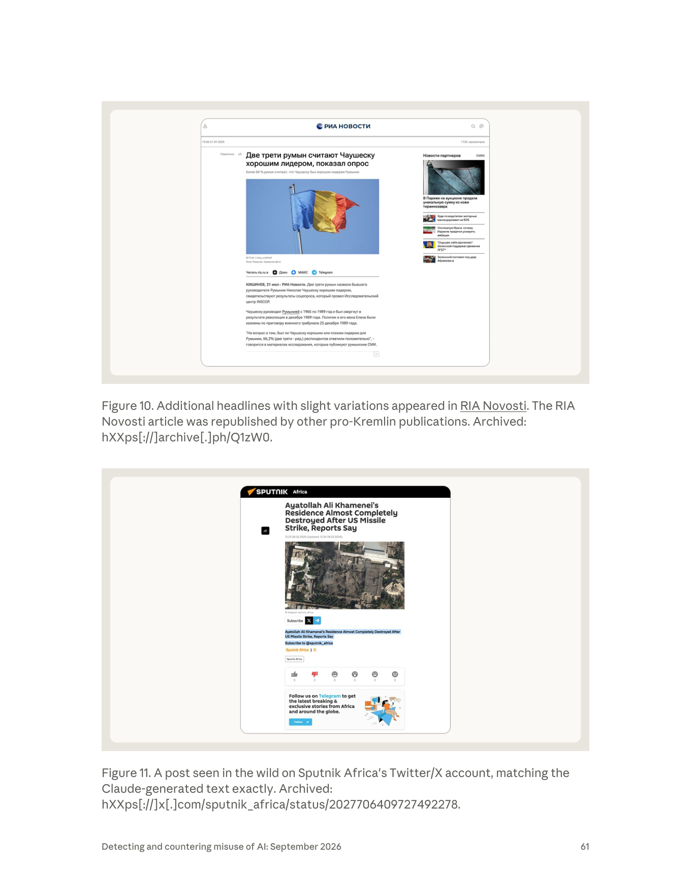

課程模組：02 影響力行動（Influence operations） ｜ 一手來源：PDF p.58–62 ｜ 整理日期：2026-09-13
原文標題：GTG-24015: Disrupting Russian state-media editorial pipelines built on Claude
報告：Anthropic,《Detecting and countering misuse of AI: September 2026》（2026-09-10 發布），影響力行動章節第 4 個案例。
本檔所有頁碼均指 PDF 頁碼。凡「報告未寫」之處均明確標示；第三方來源一律標明「獨立查證」或「僅引述 Anthropic」。

報告刻意使用 individual actors（個別行為者） 一詞，並強調「雖然這些個別行為者試圖隱匿身分（attempted to conceal their identities）」（p.58）。四個帳號對應四條產製線，報告在 Key findings（p.59）只描述了其中三條的行為者，第四條（Sputnik Africa）僅出現在 p.60 的分發表格。整理如下：
| # | 報告的身分描述（逐字） | 對應媒體 | 語言／受眾 | 報告披露的細節 |
|---|---|---|---|---|
| A | "A former Sputnik Moldova editor-in-chief"（前 Sputnik Moldova 總編輯） | Sputnik Moldova（Telegram）、RIA Novosti | 俄語／摩爾多瓦俄語人口 | 把羅馬尼亞語與摩爾多瓦新聞、民調資料、反對派社群貼文轉為俄語文章；製造 false verification loops；選前放大對 Maia Sandu 的捏造誹謗 |
| B | "A contractor with links to Russia"（與俄羅斯有關聯的承包者），"Under the editorial watch of a Sputnik Mundo presenter and producer"（在一名 Sputnik Mundo 主持人兼製作人的編輯監督下） | Sputnik en Español；Telegram 頻道 @ATodaPotencia | 拉美西班牙語 | 直接從 Telegram 頻道（俄國軍事部落客 Rybar、Colonel Cassad 等）抓內容，用 Claude 寫成拉美西語文章；同時餵給「號稱獨立」的 Telegram 頻道，把克里姆林敘事重新包裝成「在地評論」 |
| C | "An employee of a Russian state-owned media outlet"（一名俄羅斯國有媒體的員工） | RT English newsroom（表格：RT global English broadcast） | 英語／RT 全球廣播 | 用 Claude 產製直播用的跑馬燈（tickers）、螢幕字幕（screen captions／chyrons）、旁白稿（voiceover scripts）、短標題；輸入來源是俄羅斯通訊社、SVR（對外情報局）、國防部；「至少一次確認實際上了俄羅斯的電波」 |
| D | （Key findings 未描述行為者身分） | Sputnik Africa（@sputnik_africa X／Twitter 與 News posts） | 英語／非洲公眾 | 來源為俄語與法語通訊稿（RIA Novosti、TASS、Sputnik Afrique）；產出「依 40 條規則的內部風格指南（40-rule house style guide）」撰寫的 X 貼文與新聞稿 |
注意：報告沒有點名任何個人，也沒有說明四人之間是否互相認識或協調。報告只說「四個帳號」「四個作業（all four operations）」。教材中不得把公開報導中的任何真實人物（例如 2023 年被摩爾多瓦驅逐的 Sputnik Moldova 負責人）與行為者 A 劃上等號——報告沒有這樣寫。
報告使用的歸因語句（p.58）：
"we assess with high confidence that the actors ultimately shared the outputs with Russian state-owned and state-funded media and that content generated by Claude was ultimately published and broadcast through Russian state-aligned media outlets"
拆解這句話，high confidence 的對象是兩件事：（1）產出被交給俄羅斯國有／國家資助媒體；（2）Claude 生成內容最終被發布、播出。high confidence 的對象不包括：行為者的真實姓名、行為者與媒體機構的正式雇傭關係是否仍存在（「前」總編輯、「承包者」、「員工」是三種不同的關係）、媒體機構高層是否知情或授權使用 Claude。
情報分析的信心語言（可對照美國 ICD 203 與英國 PHIA 的用法）：
| 措辭 | 意義 | 在本案的適用 |
|---|---|---|
| high confidence | 判斷基於高品質、多來源、相互印證的資訊；分析者認為推翻的可能性低 | 「內容被國家媒體發布」——因為 Anthropic 能拿模型端輸出與公開貼文逐字比對（Figure 11），這是最強的證據型態之一 |
| moderate confidence | 資訊可信但來源單一或有缺口，或可有其他解釋 | 報告未使用；但「四位行為者之間是否協調」若要評估，恐怕只能到此等級 |
| low confidence | 資訊零碎、來源可疑、或推論鏈太長 | 報告未使用 |
| suspected / consistent with | 只是型態相符，未排除其他行為者；常用於網攻歸因（如本報告 cyber 章節的 "consistent with Midnight Blizzard"） | 本案未使用，因為本案不是「行為型態像誰」的推論，而是「產出被誰發布」的直接比對 |
教學提醒：本案歸因的「強」，強在內容血緣證據（模型輸出 ↔ 公開發布），而不是強在身分證據。這與網攻案例常見的「基礎設施重疊、TTP 相似」歸因邏輯不同。上課時請學員區分：「我們確定內容是 Claude 寫的、確定它被 RIA Novosti 刊出」與「我們確定是誰按下了送出鍵」是兩個不同層級的主張。
報告 IOC 表把 RT English 標為「Russia Today, ANO TV-Novosti」（p.62），其餘四家都屬 Sputnik／RIA Novosti 體系。依公開資料：
這些制裁事實對課程的意義：報告中 5 家分發媒體全部在歐美制裁或指定名單上，其中兩家（Sputnik Moldova、RT）已被公開指控參與對摩爾多瓦的選舉干預。所以「AI 進入國家媒體產製線」不是抽象風險，而是進入了已被定性為「情報／影響力機構」的組織。
章節導論把本案歸類為趨勢「AI as a newsdesk」（p.42）：
"In several cases, Claude was slotted into a human-edited pipeline that was already up and running, playing the role of a sub-editor or content creator. This allowed low-resourced actors to run influence operations at a scale well beyond what they could accomplish alone."
對照同章其他案例（例如馬來西亞 GTG-14002 的 1,000 個假帳號、2026-05-17 同一時間戳建立的 12 個 sockpuppet），本案的關鍵差異：
| 面向 | AI 產生假帳號內容（典型 CIB） | AI 進入合法登記國家媒體的產製流程（本案） |
|---|---|---|
| 發布主體 | 假身分、假媒體、假記者 | 真實、可驗證、（在俄國）合法登記的媒體品牌與官方帳號（@sputnik_africa 是官方帳號） |
| 平台可見訊號 | 帳號建立時間叢集、IP／裝置共用、貼文同步、頭像 AI 生成 | 全部不存在——官方帳號的行為模式本來就是高頻、集中發稿 |
| 「不實」在哪裡 | 身分不實 + 內容不實 | 身分真實；不實在於來源標示與確信程度（把未經驗證的主張寫成事實、把俄方來源洗成「獨立報導」） |
| 傳統判準 | Coordinated Inauthentic Behavior（Meta）、Platform Manipulation（X）、「協同 + 不真實」兩要件 | 「協同」是新聞編輯部的正常工作；「不真實」找不到帳號層級的證據 → CIB 判準失效 |
| 觸及 | 通常很低（導論 p.43：「多數內容幾乎沒有真實互動」） | 透過「媒體既有的頻道」分發，可到 FM 廣播、衛星電視（p.44） |
| 可用的對策 | 帳號封鎖、網絡下架 | 國家媒體標籤（platform labels）、制裁／封鎖、內容血緣追蹤、模型供應商端的偵測 |
| 模型供應商的角色 | 平台下架後才看得到 | 唯一能在「內容產出時」看到的節點（p.42：「我們可能在作業還在建構時就在 Claude 上看到它」） |
報告自己也承認能見度的邊界（p.42）：「我們對這些作業的能見度在它上線後就結束了。」因此本案的偵測是上游（模型端）看到生成、下游（公開網路）找到發布兩端合攏的結果——這就是第 6.5 節要講透的內容指紋比對。
各大平台的治理政策幾乎都建立在兩個並列要件上：
兩個要件缺一不可——這是設計上的刻意選擇，目的是避免把「一群真人一起發表相同政治意見」誤判為操弄（那是言論自由，不是操弄）。
把本案代入：
| 要件 | 本案的狀況 | 判定 |
|---|---|---|
| Coordinated | 四條產線、五家媒體、一個轉載生態系，高度協同 | 成立，但「新聞集團內部協同發稿」本來就是正常業務，不構成違規 |
| Inauthentic | @sputnik_africa 是 Sputnik Africa 真正的官方帳號；RIA Novosti 是真的通訊社；發稿者是真的（前）新聞從業者 | 不成立 |
→ CIB 政策無法適用。 這不是政策寫壞了，而是本案的行為者找到了政策設計上的結構性空隙：讓「協同」發生在合法機構內部，讓「不實」只存在於內容的來源標示與確信程度，而那兩件事都不是帳號層級的屬性。
唯一勉強落在 CIB 範圍內的資產是 @ATodaPotencia（p.62 定性為「Presents Kremlin-aligned content as organic Latin American analysis」）——它同時滿足協同與不實。注意這個對比：同一個作業裡，四分之三的通路免疫於 CIB 政策，四分之一不免疫。行為者顯然知道兩者的差別，並且兩種都用。
課堂延伸問題：如果把「不實」的定義從「帳號身分不實」擴張到「來源標示不實」，會發生什麼？（可能的後果：任何未完整揭露消息來源的新聞都可能被判違規——這對新聞業是災難。所以政策不能這樣改，問題必須用別的方式解決。 這正是為什麼本案的解方在「揭露義務 + 內容血緣監測」，而不在「平台政策」。）
報告只用一句話帶過選舉（p.59），但這句話背後是 2025 年歐洲規模最大的選舉干預事件之一。本案的行為者 A 是這場干預中的一個內容產製節點，把大局講清楚，學員才會知道「一個前總編 + 一個 LLM」在整盤棋裡的位置。
| 面向 | 具體內容 | 來源 |
|---|---|---|
| 金流 | Sandu 稱俄國投入「數億歐元」；Stimson 記載「至少 1 億歐元」；使用盧布穩定幣 A7A5，經土耳其、阿聯、黎巴嫩的黑市交易所洗入摩爾多瓦政治，規避制裁 | Stimson Center 2025-09-25；Atlantic Council 2025-10-23 |
| 買票 | 先在加告茲自治區（Gagauzia）試行的買票模式擴大到全國；由逃亡莫斯科的寡頭 Ilan Șor 主導 | Stimson Center |
| 街頭動員 | 俄方操作方準備了「縱火、流氓行為、假炸彈警報、網路攻擊」等引爆街頭動亂的劇本；有摩國人赴塞爾維亞接受俄羅斯特勤機關代表訓練 | Stimson Center |
| 執法反制 | 2025-09-22（投票前六天）摩國警方執行 250 次搜索，調查「由俄羅斯聯邦協調的大規模騷亂與破壞穩定之準備」 | Stimson Center |
| 宗教網絡 | 摩爾多瓦東正教神職人員在赴俄朝聖期間被系統性吸收，每人獲 1 萬盧布教會採購金，回國後在 Telegram 散布親俄內容 | Reuters 調查（經二手報導） |
| FIMI 內容總量 | G7 快速反應機制偵測到逾 450 則 FIMI 內容，其中 91% 屬俄羅斯國家相關行動 | G7 RRM 報告（Global Affairs Canada，2026-05-11） |
| 假媒體網站 | Storm-1516 建立至少 45 個偽裝成摩爾多瓦／羅馬尼亞媒體的新網站，以羅馬尼亞語發布捏造報導 | G7 RRM |
| 深偽與假影片 | Operation Overload（＝Matryoshka／Storm-1679）自 2025-07-08 起產出冒充摩國政府發言人 Daniel Vodă 的深偽影片；一支宣稱政府禁止男性出境的影片觸及 270 萬次以上；一支燒選票影片在 X 上達 500 萬次以上 | Recorded Future Insikt Group；G7 RRM |
| Telegram 機器人 | 2025-07-01 至 09-15 期間，76 個 Telegram 頻道內有 462 個機器人帳號產出逾 62,000 則留言（占全部留言 12.8%）；其中 16 個頻道的留言半數以上來自機器人；95% 的留言為獨特文本（顯示是 LLM 生成而非模板）；347/462（75%）同時活躍於俄語與烏克蘭語頻道 | OpenMinds，2025-09-24 |
| Pravda / Portal Kombat | 193 個以上網站的網絡，「使用生成式 AI 協助產製內容」；曾因失誤把 ChatGPT 的提示詞當成文章標題發布 | G7 RRM |
報告只寫「fabricated, defamatory claims」，沒有舉例。公開世界可查證到的同期指控包括：
重要界線：報告沒有說 Anthropic 觀察到的是上述哪一則。不要在課堂上宣稱「Claude 寫了 Sandu 販賣兒童的假新聞」——報告沒有這樣寫。 只能說：報告所稱的捏造誹謗指控，與公開世界同期記錄到的指控處於同一個作業空間。
把 G7 RRM／Recorded Future／OpenMinds 的發現與 Anthropic 的發現並排：
flowchart TB
A["外部研究者看得到的一半（G7 RRM, Recorded Future, OpenMinds, NewsGuard）<br/>─ 45 個假媒體網站<br/>─ 462 個 Telegram 機器人<br/>─ 深偽影片、假塗鴉<br/>─ 193 個 Pravda 網站<br/>─ 450+ 則 FIMI 內容<br/>─ 觸及數（270 萬、500 萬）<br/>※ 全部屬於「不真實資產」——可被 CIB 政策處理"]
B["只有模型供應商看得到的一半（Anthropic GTG-24015）<br/>─ 前總編用 Claude 做跨語改寫<br/>─ 產出進入 Sputnik Moldova Telegram 與 RIA Novosti<br/>─ 轉載鏈製造假驗證迴圈<br/>※ 全部發生在「真實掛牌媒體」內——CIB 政策碰不到"]
A -.->|"⟂ 兩份報告互不重疊"| B
G7 RRM 報告完全沒有提到 Anthropic 或 Claude；Anthropic 報告完全沒有提到 Storm-1516、Matryoshka 或 Pravda 網路。 兩邊各自看到一半，而且都不知道自己只看到一半。
這是本案最重要的方法論結論，請務必在課堂上講出來：
影響力行動的完整圖像，必須由「平台端」「模型供應商端」「開源研究端」三方拼合才可能得到。任何單一方的報告，結構上都是殘缺的。 這也解釋了為什麼 p.42 說 Anthropic「依賴開源研究、跨平台產業資料與公開報導」——他們知道自己只有一半。
本案沒有傳統意義上的「受駭組織」，受害者是資訊環境與受眾。依報告 p.58–60 整理：
| 產製線 | 目標受眾（報告原文） | 被鎖定的人物／議題 | 具體受害數字（報告有寫的） |
|---|---|---|---|
| Sputnik Moldova / RIA Novosti | Moldova (Russian-speaking) | 摩爾多瓦總統 Maia Sandu（「fabricated, defamatory claims」）；2025-09-28 國會大選前的選民；反對派社群貼文被當素材再利用（"covert opposition-party material"） | Telegram 貼文 2.09K 瀏覽（Figure 9）；RIA Novosti 文章頁面顯示 1,725 次瀏覽（Figure 10 截圖，報告正文未寫此數字）；報告：「no other exact matches were observed」 |
| Sputnik en Español + @ATodaPotencia | Latin America (Spanish) | 拉美西語讀者；把俄國軍事部落客（Rybar、Colonel Cassad）的內容在地化 | 報告未給數字 |
| Sputnik Africa | African publics (English) | 非洲英語讀者；例：2026-02-28 對 Khamenei 官邸遭美國飛彈攻擊的報導 | Figure 11 截圖顯示網站頁面互動極低（👍0 👎2）；X 貼文瀏覽數報告未寫 |
| RT English newsroom | RT global English broadcast | RT 全球英語觀眾 | 「至少一次確認實際播出」（p.59）；「the aired broadcast copy」（p.58） |
間接受害者／被利用者：
- INSCOP Research 與 IICCMER（羅馬尼亞民調機構與「共產罪行調查所」）：其 2025-07-21 發布的合法民調被抓來做俄語內容素材（Figure 9／10）。民調本身是真的（獨立查證，見第 9 節）——這正是「真素材、假框架」的典型。
- ru[.]euronews[.]com、point[.]md 等被列入「摩爾多瓦放大生態系」的網域（p.62）：報告只列為 indicator，沒有說它們知情參與。合法或半合法媒體被當成洗白鏈的中繼站，是這類作業的設計本意（見第 4.6 節）。
- 羅馬尼亞公眾：Ceaușescu 民調的俄語再包裝，服務於「羅馬尼亞人懷念社會主義」的敘事，最終受眾是摩爾多瓦俄語人口（對他們暗示「連羅馬尼亞人都懷念舊時代」）。
受眾規模的量級參考（獨立查證，非報告數字）：LetsData 2025 年的分析指出，Sputnik 的俄語摩爾多瓦 Telegram 頻道在 2024 年 11–12 月每週 300–350 萬次瀏覽，到 2025 年 4–5 月降至每週 200–250 萬；羅馬尼亞語頻道在 2025-02-22 發出最後一篇後停更，2025-02-25 出現一個複製俄語版內容的「Sputnik Молдова 2.0」新頻道。注意：該分析摘要把 2.0 頻道的 handle 記為 @mdsputnikmd_2，但 Figure 9 截圖底部明確顯示 t.me/rusputnikmd_2/12933、署名 @rusputnikmd_2。以 PDF 截圖為準，第三方 handle 記述的差異列入第 12 節「未能驗證之處」。
報告在本案沒有獨立的 "Attack lifecycle and AI usage" 段落（那是前一案 GTG-14002 的格式）。本節依 p.58–60 的敘述與 p.60 分發表格重建生命週期，並標示每一階段「人類做什麼／Claude 做什麼」與自主程度。
本報告全書用三個層級描述 AI 的角色：對話式協助（conversational assistance）→ 人類逐步指揮（human-in-the-loop, step-by-step direction）→ AI 編排多代理自主執行（agentic orchestration）。
本案落在第二級：人類逐步指揮。 判斷依據：
- 報告說 Claude 是「sub-editor layer（副編輯層）」，被「slotted into a human-edited pipeline that was already up and running」（p.42、p.59）——有人類總編在上面把關。
- 報告說行為者「turned out completed polished content, sending it straight to the production line to be aired」（p.58）——人類負責交付與送版。
- 報告沒有提到本案使用 agent 框架、工具呼叫、批次自動化或持久記憶檔（那些是同章其他案例的特徵，見導論 p.43 "Complex tool use"）。
- 唯一接近自動化的線索是 Sputnik Africa 的「40-rule house style guide」——把編輯部風格規則固化成一份規則集餵給模型，這是「持久指令檔」而非「自主代理」。
教學重點：本案的危險不在自主性高，而在嵌入位置好。自主程度低的 AI，只要接在一條已經有分發管道、有公信力品牌、有廣播執照的產線上，影響力就遠大於一個全自動但沒人看的假帳號網絡。課堂上請刻意打破「越自主越危險」的直覺。
| 產製線 | 報告寫的來源材料（p.59–60 原文） | 人類做什麼 | Claude 做什麼 |
|---|---|---|---|
| Moldova | "Romanian and Moldovan news, polls, opposition social posts" | 選定羅馬尼亞語／摩爾多瓦語新聞、民調、反對派的社群貼文並貼進對話 | （報告未描述 Claude 執行蒐集） |
| LatAm | "Russian milblogger Telegram (Rybar, Colonel Cassad, others)"；承包者「pulled content directly from Telegram channels」 | 從軍事部落客 Telegram 直接取文 | 同上 |
| Africa | "Russian and French wires (RIA Novosti, TASS, Sputnik Afrique)" | 取俄語與法語通訊稿 | 同上 |
| RT English | "Russian wires, SVR and Defence-Ministry claims" | 取通訊社稿、SVR（對外情報局）與國防部的主張 | 同上 |
這一階段最值得講的一件事：RT English 這條線的輸入來源包含 SVR 與國防部。報告括號註明 SVR 是 "the civilian foreign intelligence agency"（p.59）。也就是說，情報機關的素材，經由一名員工＋一個商用 LLM，被轉成當天要上電視的跑馬燈文字。從「情報產品」到「觀眾眼球」的距離被壓縮到一個對話工作階段。
另一個細節：Moldova 線的來源含「opposition social posts」，而 p.59 分發表格的產出形態欄寫著「covert opposition-party material」。報告沒有展開這個詞，但字面意思是：反對派（在摩爾多瓦語境即親俄陣營）的材料以不揭露來源的方式被使用。這是「素材來源即利害關係人」的典型——課堂可用來討論「新聞的素材鏈」為什麼是查核的第一現場。
這是報告唯一明確描述 Claude 動作的階段：
| 通路 | 形態 | 證據 |
|---|---|---|
| Sputnik Moldova 2.0 Telegram（@rusputnikmd_2） | 帶影片的 Telegram 圖文貼文 | Figure 9，2.09K 瀏覽，貼文編號 12933，07-21 09:57 編輯 |
| RIA Novosti（ria.ru） | 通訊社網站稿，電頭「КИШИНЕВ（基希訥烏）」 | Figure 10，19:56 21.07.2025，1725 瀏覽 |
| Sputnik Africa（en.sputniknews.africa + @sputnik_africa X） | 網站稿 + X 貼文 | Figure 11，12:23（更新 12:24）28.02.2026 |
| Sputnik en Español + @ATodaPotencia | 西語文章 + Telegram 貼文 | 報告未附圖 |
| RT English | 上電視的跑馬燈／字幕／旁白 | 報告未附圖，僅稱「at least one confirmed instance … made it to Russian airwaves」 |
報告的兩句關鍵原文：
"amplified across a network of Russian and Moldovan outlets to manufacture false verification loops. The same story was echoed across different outlets so it appeared to be independently confirmed."（p.59）
"Actors used a chain of different outlets to make Russian-origin claims appear to be independently reported."（p.58）
p.62 IOC 表列出這個放大生態系的節點：eadaily[.]com（已被歐盟制裁）、point[.]md、vz[.]ru、mos[.]news、ru[.]euronews[.]com。
「假驗證迴圈」的機制（本案的教學核心之一）：
flowchart TD
N1["[1] 真實素材<br/>羅馬尼亞 INSCOP 民調（2025-07-21 公布，真實存在）"]
N2["[2] AI 改寫<br/>Claude 產出俄語文章／貼文（選框、選數字、選脈絡）"]
N3a["[3a] Sputnik Moldova 2.0 Telegram（07-21 上午，2.09K views）"]
N3b["[3b] RIA Novosti ria.ru（07-21 19:56，電頭 КИШИНЕВ，1725 views）"]
N4["[4] 其他親克里姆林出版物轉載<br/>（報告：republished by other pro-Kremlin publications）<br/>候選節點：eadaily[.]com / point[.]md / vz[.]ru / mos[.]news / ru[.]euronews[.]com"]
N5["[5] 讀者／演算法看到的是「多家媒體都在報」"]
N6["[6] 搜尋引擎與 LLM 檢索到多個「來源」→ 再次確認"]
N1 --> N2
N2 --> N3a
N2 --> N3b
N3b -->|"※ 標題「略有變化」＝人工潤飾痕跡"| N4
N4 --> N5
N5 --> N6
為什麼這條鏈讓事實查核變困難（請務必在課堂上逐條講）：
報告 p.59：承包者「also fed the output produced to a supposedly independent Telegram that reframes Kremlin-aligned narratives so they look like authentic local commentary」。IOC 表把 @ATodaPotencia 標為「Deceptive amplification asset — Presents Kremlin-aligned content as organic Latin American analysis」（p.62）。
這是本案中唯一帶有傳統「不真實（inauthentic）」性質的資產：一個偽裝成獨立拉美分析者的 Telegram 頻道。也就是說，同一個作業同時使用了「掛牌國家媒體」與「偽裝獨立頻道」兩種通路——前者提供公信力與觸及，後者提供「連在地人都這麼說」的社會證明。課堂可用這一點說明：新型作業不是取代舊手法，而是把舊手法接到新管線上。
| 階段 | 人類 | Claude | 自主程度 | 本案證據頁 |
|---|---|---|---|---|
| 1 蒐集 | 選素材（含 SVR／國防部主張、反對派貼文、外語民調） | — | 人類 100% | p.59–60 |
| 2 生成／在地化 | 下指令、給風格規則（40 條） | 跨語改寫、在地化、字元精確的廣播文案 | 人類逐步指揮 | p.59–60 |
| 3 把關送版 | 主持人／製作人審稿、微調標題 | — | 人類 100% | p.58, p.59 |
| 4 發布 | 用媒體官方帳號發出 | — | 人類 100% | Fig.9–11 |
| 5 放大 | 轉載鏈（5 個已知網域節點） | — | 人類／既有生態系 | p.59, p.62 |
| 6 偽裝在地 | 餵給偽獨立頻道 @ATodaPotencia | — | 人類 100% | p.59, p.62 |
AI 觸及的階段只有第 2 階段——但那正是過去唯一需要大量受訓編輯人力的階段。 報告 p.58 的結論句就是這個意思：「By using Claude's workflows, the actors achieved a scale of production that would normally require an entire team of trained editorial staff.」
報告把四個帳號並列，但四條線的風險結構完全不同。逐條拆解，因為每一條都對應到一種台灣也會遇到的樣態。
| 項目 | 內容 |
|---|---|
| 行為者 | 前 Sputnik Moldova 總編輯（p.59） |
| Claude 的工作 | 跨語言改寫：羅馬尼亞語／摩爾多瓦語 → 俄語 |
| 素材 | 新聞、民調資料、反對派社群貼文 |
| 產出 | Sputnik Moldova Telegram 貼文 + RIA Novosti 通訊社稿 + 「covert opposition-party material」 |
| 獨特風險 | 選舉時機。這是四條線中唯一明確與一場具體選舉綁定的（2025-09-28）。也是唯一提到捏造誹謗（fabricated, defamatory）的 |
| 獨特手法 | 假驗證迴圈——同一則故事在多家媒體互相呼應，偽造「獨立證實」的外觀 |
| 圖表證據 | Figure 9（Telegram，2.09K）、Figure 10（RIA，1,725） |
| 最佳偵測落點 | 轉載鏈。同一則內容在 Telegram 與 ria.ru 同日出現，之後擴散到 5 個已知網域（p.62 IOC） |
| 台灣對應 | 中國官媒稿 → 簡繁與用語轉換 → 台灣聚合站／粉專 → 商業媒體引用「陸媒報導」 |
這條線為什麼是四條中最危險的：它同時具備（1）具體的選舉時間窗、（2）針對在任元首的人身指控、（3）跨語言的資訊不對稱（俄語受眾看不懂羅語原文，無從查證）、（4）完整的轉載放大生態系。四個條件同時成立時，AI 提供的速度優勢會被完整兌現。
| 項目 | 內容 |
|---|---|
| 行為者 | 「與俄羅斯有關聯的承包者（a contractor with links to Russia）」，在「一名 Sputnik Mundo 主持人兼製作人的編輯監督下」（p.59） |
| Claude 的工作 | 語域在地化：俄語軍事部落客內容 → 拉美西班牙語文章 |
| 素材 | 俄國軍事部落客 Telegram：Rybar（@rybar_america）、Colonel Cassad（@boris_rozhin） 等 |
| 產出 | Sputnik en Español 文章 + @ATodaPotencia Telegram 貼文 |
| 獨特風險 | 雙軌分發——掛牌國家媒體 + 偽裝成獨立在地分析的頻道。同一份內容走兩條路，一條給公信力，一條給「連在地人都這麼說」的社會證明 |
| 獨特手法 | 來源等級跳躍：軍事部落客（非新聞機構、無查證流程）的內容，經 AI 改寫後以通訊社品牌發布。中間的查證環節被整個跳過 |
| 圖表證據 | 無（報告未附圖） |
| 最佳偵測落點 | 輸入端。Rybar／Colonel Cassad 的貼文是公開的，可以監測「某則俄語軍事部落客內容多久後以西語出現在 Sputnik en Español」，做出預測性告警 |
| 台灣對應 | 微博／抖音熱點或軍事自媒體內容 → 用語在地化 → 台灣「軍武」粉專與 YouTube 頻道 → 被當成「消息人士」引用 |
「承包者（contractor）」這個詞值得單獨講。 它意味著：這個人不是媒體的正式員工，但有一位正式的主持人兼製作人在上面把關。這是外包化的產製結構——責任與可歸責性被拆開：媒體可以說「他不是我們的人」，承包者可以說「我是照編輯指示做的」。AI 讓這種結構更容易維持，因為單一承包者的產能現在等於過去一個小組。
| 項目 | 內容 |
|---|---|
| 行為者 | 報告未描述（Key findings 只寫了三位行為者，這條線只出現在 p.60 表格） |
| Claude 的工作 | 依 40 條內部風格規則（40-rule house style guide） 產製 X 貼文與新聞稿 |
| 素材 | 俄語與法語通訊稿（RIA Novosti、TASS、Sputnik Afrique） |
| 產出 | @sputnik_africa 的 X/Twitter 貼文 + 網站 News posts |
| 獨特風險 | exact match 出現在這裡（Figure 11）——人工把關最少的一條線 |
| 獨特手法 | 風格規則集固化。把編輯部規範寫成 40 條規則餵給模型，等於把「編輯的判斷」轉成「可重複執行的指令」。這是四條線中最接近自動化的一條 |
| 圖表證據 | Figure 11（exact match，全報告唯一） |
| 最佳偵測落點 | 模板化偵測。40 條規則會在產出中留下高度一致的結構痕跡（例如固定的標題 + CTA 組合，見 6.4）。對單一帳號的貼文做結構聚類即可發現 |
| 台灣對應 | 媒體內部的「社群小編 SOP」被寫成 prompt；下標、摘要、CTA 全自動化 |
40 條規則是本案最被低估的細節。 它證明了導論 p.43 所描述的趨勢在本案也成立：「Markdown files containing doctrine were reused almost verbatim across hundreds of sessions.」——編輯部規範就是 doctrine 的一種。當規範被固化成檔案，換誰來操作都能產出一致的內容，作業對特定人員的依賴就消失了。這也是為什麼報告說行為者之間「never needed to coordinate with or even know one another」。
| 項目 | 內容 |
|---|---|
| 行為者 | 「一名俄羅斯國有媒體的員工（an employee of a Russian state-owned media outlet）」（p.59）——唯一被明確描述為現職員工的行為者 |
| Claude 的工作 | 字元精確（character-exact） 的廣播文案：跑馬燈（tickers）、下標字幕（chyrons／screen captions）、旁白稿（voiceover scripts）、短標題 |
| 素材 | 俄羅斯通訊社 + SVR（對外情報局） + 國防部的主張 |
| 產出 | 上電視的播出文案 |
| 獨特風險 | 危害最高：廣播內容無法被轉發查核、無法被平台標註、觀眾沒有「點進去看來源」的選項。一旦播出，就是單向的 |
| 獨特手法 | 情報素材直通播出。從 SVR 的主張到螢幕下方的跑馬燈，中間只有一名員工和一個 LLM |
| 圖表證據 | 無。報告只說「至少一次經確認」上了電波，未說明確認方法 |
| 最佳偵測落點 | 極難。需要廣播監看（broadcast monitoring）能力，且要能把播出文字與模型輸出比對。這是四條線中外部研究者最無能為力的一條 |
| 台灣對應 | 電視台跑馬燈、新聞下標、快訊文案的 AI 化。台灣的電視新聞跑馬燈本來就以速度優先、查核最薄弱著稱 |
為什麼這條線值得在課堂上花最多時間：
1. 它是四條中唯一涉及情報機關直接供稿的。
2. 它是四條中唯一進入傳統廣播的（章節導論 p.44 明確說「最廣泛的真實觸及」發生在國家媒體作為分發機制、包括 FM／衛星／短波廣播與全球電視的情況）。
3. 它是四條中證據最薄的（無圖、無細節、只有「至少一次」）。
4. 危害最高 × 證據最薄 = 情報分析中最難處理的組合。 讓學員練習：你要怎麼向決策者報告「一件很嚴重但我們只有一個未說明來源的確認案例」的事？
| A・Moldova | B・LatAm | C・Africa | D・RT English | |
|---|---|---|---|---|
| 行為者身分 | 前總編（離職） | 承包者（外包） | 未描述 | 現職員工 |
| Claude 的核心能力 | 跨語言 | 語域在地化 | 規則遵循 | 格式壓縮 |
| 素材來源的權威性 | 中（民調、新聞） | 低（軍事部落客） | 中（通訊社） | 高但不可驗證（SVR、國防部） |
| 人工把關程度 | 中（Fig.10 有潤飾） | 中（有製作人監督） | 低（Fig.11 exact match） | 未知 |
| 匹配等級 | L0 一則 + L1 | 無證據 | L0 | 無圖證據 |
| 外部可偵測性 | 高（轉載鏈） | 中（輸入端可測） | 中（模板化可測） | 極低 |
| 危害等級（本檔評估） | 高（選舉） | 中 | 中 | 最高（廣播 + 情報供稿） |
綜合觀察：外部可偵測性與危害等級呈反比。 最好查的（Moldova 的轉載鏈）不是最危險的；最危險的（RT 廣播）幾乎查不到。這個反比關係是影響力行動偵測工程的結構性困難，也是本案給防禦方最重要的警告。
ATT&CK 描述的是對電腦系統的入侵行為（初始存取、權限提升、橫向移動、外洩）。本案沒有入侵、沒有惡意程式、沒有 C2、沒有受駭主機。行為者使用的是合法購買的 API／帳號與自己機構的發稿權限。若硬套 ATT&CK，只能勉強對到：
| 勉強可對 | ID | 為什麼勉強 |
|---|---|---|
| Acquire Infrastructure | T1583 | 行為者取得 Claude 帳號／Telegram 頻道，但這是合法取得，不是攻擊基礎設施 |
| Establish Accounts | T1585 | 同上；且本案主要用的是真實媒體帳號，不是建立假帳號 |
| Gather Victim Org Information | T1591 | 只有在「蒐集反對派社群貼文」時勉強沾邊 |
課程結論：ATT&CK 不是這類案例的框架缺口，而是根本不同的問題域。 學員若在報告中看到 influence ops 被排進「威脅情報」框架，要能立刻分辨「這需要換一套 TTP 詞彙」。正確的工具是 DISARM Framework（原 AMITT），它是專門描述資訊操弄的 TTP 分類法，結構刻意仿 ATT&CK（TA 戰術 / T 技術 / 子技術）。
ID 取自 DISARM Foundation 官方技術索引。未能逐一核對到官方 ID 的行為，明確標記為「無對應 ID」。
| DISARM 技術 ID | 技術名稱 | 本案的具體作法（頁碼） | 偵測構想 |
|---|---|---|---|
| T0073 | Determine Target Audiences | 四條產製線各自鎖定摩爾多瓦俄語人口／拉美西語／非洲英語／RT 全球英語（p.59–60） | 模型端：同一帳號在單一工作階段內反覆要求「同一主題、不同語言／不同受眾語域」的重寫 |
| T0003 | Leverage Existing Narratives | 把真實的 INSCOP 民調嫁接到「社會主義懷舊／對歐盟路線的質疑」既有敘事（Fig.9–10） | 內容端：真素材 + 高度選擇性的脈絡框架 |
| T0023 | Distort Facts | 把 66.2% 的民調寫成「連羅馬尼亞人都認為 Ceaușescu 是好領導人」的政治訊息；RIA 稿把來源推給「羅馬尼亞媒體」 | 查核端：比對原始民調問卷措辭 vs. 報導措辭 |
| T0082 | Develop New Narratives | 對 Maia Sandu 的 "fabricated, defamatory claims"（p.59） | 模型端：要求生成對特定在任元首的未經證實指控 |
| T0084 | Reuse Existing Content | 直接取用通訊社稿與 Telegram 頻道內容作為輸入（p.59–60） | 模型端：輸入是整篇他人文章＋「改寫／在地化」指令 |
| T0084.002 | Plagiarise Content | 從 Rybar、Colonel Cassad 等 Telegram 頻道「pulled content directly」（p.59） | 內容端：與已知來源做近似重複（near-duplicate）比對 |
| T0084.003 | Deceptively Labelled or Translated | 俄語→西語／英語的在地化改寫，未標示來源為俄國軍事部落客（p.59–60） | 內容端：跨語言語意指紋比對（見 6.5） |
| T0085 | Develop Text-Based Content | 全案核心：文章、貼文、標題、跑馬燈、旁白稿（p.59） | — |
| T0085.001 | Develop AI-Generated Text | 本案的定義性行為 | 模型端日誌是唯一的一手證據 |
| T0087 / T0088 | Develop Video-Based / Audio-Based Content | RT 線的 voiceover scripts、螢幕字幕屬於影音產製的文字層（p.59）；Fig.9 貼文帶 2:10 影片 | 影音端：稿本與播出畫面的逐字比對 |
| T0097.202 | News Outlet Persona | @ATodaPotencia 偽裝成獨立拉美分析頻道（p.62） | 平台端：頻道自述「獨立」但內容與國家媒體高度同步 |
| T0100 | Co-Opt Trusted Sources | 本案最關鍵的一條：借用 RIA Novosti／RT 這些真實且有公信力的機構本身作為發布主體 | 幾乎無法從平台端偵測；需要內容血緣或內部人揭露 |
| T0101 | Create Localised Content | 拉美西語語域、非洲英語受眾、40 條在地風格規則（p.60） | 模型端：同一素材被要求產出多種區域語域版本 |
| T0115 | Post Content | 以媒體官方帳號發布（Fig.9、11） | — |
| T0118 | Amplify Existing Narrative | 轉載鏈放大（p.59） | 開源端：跨網域近似重複偵測＋時間序列 |
| T0119 | Cross-Posting | 同一則內容同日出現在 Telegram 與 ria.ru（Fig.9→10）；Sputnik Africa 網站＋X（Fig.11） | 開源端：跨平台同步發布偵測 |
| 無對應 ID | AI 作為編輯部副編輯層（sub-editor layer） | p.42、p.59 明確提出的新型態 | 框架缺口，見 5.3 |
| 無對應 ID | 風格規則集固化（house style guide as model instruction） | Sputnik Africa 的 40-rule guide（p.60） | 框架缺口，見 5.3 |
| 無對應 ID | 假驗證迴圈（manufactured false verification loop） | p.59 | DISARM 有「放大」但沒有「偽造獨立確認」這個獨立技術 |
| 層 | 誰能做 | 訊號 | 本案適用性 |
|---|---|---|---|
| 模型供應商端 | 只有 Anthropic／OpenAI 等 | 帳號用途分類（新聞產製）、素材來源特徵（通訊社稿、Telegram 全文貼入）、跨語改寫模式、要求移除 AI 文體痕跡、要求刪去不確定性註記 | 本案的實際偵測方式（p.62：「through our internal detections」） |
| 平台端 | Telegram／X | 官方帳號無異常 → 幾乎零訊號 | 失效 |
| 開源／研究端 | EU DisinfoLab、EUvsDisinfo、G7 RRM、LetsData、Doublethink Lab、IORG | 跨網域近似重複、轉載時間序列、電頭與地理不符（例：羅馬尼亞民調配基希訥烏電頭）、圖片來源自我循環（Fig.11 圖片 credit 是自家 Telegram） | 可行且必要；這是課程實作重點 |
| 查核端 | 事實查核組織 | 原始素材 vs. 報導的措辭落差、確信度升級（unverified → confirmed）、來源模糊化 | 可行但耗時 |
| 政策端 | 主管機關 | 制裁、平台標籤、廣播執照 | 對已被制裁者效果有限（Sputnik 在摩爾多瓦已被封網仍在 Telegram 運作） |
本案頁段（p.58–62）含一張跨頁分發結構表與三張截圖（Figure 9–11）。以下每一張都以 Read 工具開啟原始 PNG 逐格判讀，包含圖上實際可見的文字、數字、介面元素與語言。課程可引用的（p.58／p.59／p.62 為純文字與表格頁，未存入 course/figures）。
圖片類型：四欄結構表，跨頁排版（第一列在 p.59 底、其餘三列在 p.60 頂）。無框線、灰底圓角卡片樣式。這不是報告編號的 Figure，但它是本案資訊密度最高的一張圖。
圖上實際看到的元素：表頭四欄 —— Ultimate distribution channel（最終分發通路）、Audience（受眾）、Source material（來源材料）、Output form（產出形態）。四列資料：
| Ultimate distribution channel | Audience | Source material | Output form |
|---|---|---|---|
| Sputnik Moldova / RIA Novosti （p.59 底列） |
Moldova (Russian-speaking) | Romanian and Moldovan news, polls, opposition social posts | Russian-language articles on Sputnik Moldova Telegram and RIA Novosti, amplified cross-platform; covert opposition-party material |
| Sputnik en Español （p.60 第 1 列） |
Latin America (Spanish) | Russian milblogger Telegram (Rybar, Colonel Cassad, others) | Localized Spanish articles plus @ATodaPotencia posts |
| Sputnik Africa （p.60 第 2 列） |
African publics (English) | Russian and French wires (RIA Novosti, TASS, Sputnik Afrique) | @sputnik_africa X/Twitter and News posts under a 40-rule house style guide |
| RT English newsroom （p.60 第 3 列） |
RT global English broadcast | Russian wires, SVR and Defence-Ministry claims | Character-exact on-air tickers, chyrons, and voice-overs |
資料如何流動：這張表讀法是由右往左——Source material（輸入）→ Claude（表中不出現，但它就是欄與欄之間那個被省略的箭頭）→ Output form（輸出）→ Ultimate distribution channel（分發）→ Audience（受眾）。把 Claude 補進去，完整鏈條是：
flowchart LR
subgraph S1G["來源材料"]
A1["羅語/摩語新聞・民調・反對派社群貼文"]
B1["俄國軍事部落客 Telegram<br/>(Rybar, Colonel Cassad…)"]
C1["俄語/法語通訊稿<br/>(RIA Novosti, TASS, Sputnik Afrique)"]
D1["俄國通訊社 + SVR 主張 + 國防部主張"]
end
subgraph S2G["Claude（副編輯層）"]
A2["跨語改寫 → 俄語"]
B2["在地化 → 拉美西語"]
C2["依 40 條風格規則 → 英語"]
D2["字元精確壓縮 → 播出文案"]
end
subgraph S3G["產出形態"]
A3["俄語文章 + 跨平台放大<br/>+ 隱蔽的反對黨材料"]
B3["在地化西語文章<br/>+ @ATodaPotencia 貼文"]
C3["X 貼文 + News 稿"]
D3["跑馬燈・下標字幕・旁白"]
end
subgraph S4G["最終分發通路"]
A4["Sputnik Moldova Telegram / RIA Novosti"]
B4["Sputnik en Español + 偽獨立 Telegram"]
C4["@sputnik_africa X/Twitter + 網站"]
D4["RT English newsroom（上電視）"]
end
subgraph S5G["受眾"]
A5["摩爾多瓦俄語人口"]
B5["拉美西語受眾"]
C5["非洲英語公眾"]
D5["RT 全球英語觀眾"]
end
A1 --> A2 --> A3 --> A4 --> A5
B1 --> B2 --> B3 --> B4 --> B5
C1 --> C2 --> C3 --> C4 --> C5
D1 --> D2 --> D3 --> D4 --> D5
這張表傳達的核心訊息（三點）：
課堂用法：
- 把表格的 Source material 欄與 Audience 欄遮起來，只給 Output form，讓學員反推「這是給誰看的、原料是什麼」。訓練的是從產物反推產製鏈的分析肌肉。
- 讓學員在表上標出「哪一欄是平台看得到的、哪一欄是模型供應商看得到的、哪一欄是誰都看不到的」。答案：平台只看得到最右兩欄；模型供應商看得到左邊三欄；Ultimate distribution channel 這一欄，只有把兩邊拼起來才知道。這就是為什麼本案需要 Anthropic 的內部偵測 + 開源比對兩者合攏。
（頁面下半）
報告圖說原文：
"Figure 9. An example of a post created with Claude as published, which received 2.09K views; no other exact matches were observed. \"Sputnik Moldova 2.0\" is part of a network of channels and sites associated with Sputnik News."
圖片類型：Telegram 貼文截圖，被放在一張淺綠色 Telegram 預設聊天背景（有淡色塗鴉圖案）上，外層再套一張白色卡片。這是典型的「Telegram 分享卡（share preview）」渲染樣式。
平台與語言：Telegram；貼文正文俄語；開頭有一面 🇷🇴 羅馬尼亞國旗 emoji；頻道名稱列被打碼模糊（可辨識為 "Sputnik Молдова 2.0" 加一面摩爾多瓦國旗 emoji，右上角是 Telegram 紙飛機圖示）。
畫面上可見的介面元素（由上而下）：
1. 圓形頻道頭像（深色，中央有橘黃色 Sputnik 標誌的一角）。
2. 頻道名稱列（模糊處理）＋ Telegram logo。
3. 影片附件，中央有播放鍵，右下角顯示時長 2:10。畫面內容：一名穿白色衣物的人站在一面大鼓後方（畫面只見腰部以下的白衣與鼓面），色調偏舊、像檔案影片。與正文提到的 YouTube「Epoca de aur（黃金時代）」社會主義時期影像相符——這是用檔案畫面營造懷舊情緒的典型手法。
4. 正文（俄語，逐段）：
- 標題句（粗體）：🇷🇴Две трети румын считают Чаушеску "хорошим лидером" — опрос.
→ 「三分之二羅馬尼亞人認為齊奧塞斯庫是『好領導人』——民調。」
- 第一段：Такую оценку расстрелянному без суда и следствия руководителю социалистической Румынии дали 66,2% респондентов опроса румынского института INSCOP Research.
→ 「這個評價來自羅馬尼亞 INSCOP Research 機構民調中 66.2% 的受訪者，對象是這位未經審判與偵查即遭槍決的社會主義羅馬尼亞領導人。」
- 第二段：◾️Менее четверти респондентов высказали мнение, что он был плохим руководителем, а 7,8% опрошенных затруднились дать ответ.
→ 「不到四分之一受訪者認為他是差勁的領導人，7.8% 的受訪者難以回答。」
- 第三段：◾️В Youtube можно найти множество роликов с заголовком "Epoca de aur" ("Золотая эпоха"), с кадрами социалистического периода в истории Румынии.
→ 「在 YouTube 上可以找到大量標題為 "Epoca de aur"（黃金時代）的影片，內含羅馬尼亞歷史上社會主義時期的畫面。」
- 署名：@rusputnikmd_2
5. 反應列（emoji reactions）：👍 68、👎 5、😊 5、❤️ 2、🤗 1（合計 81 個反應）。
6. 頁尾列：t.me/rusputnikmd_2/12933 👁 2.09K edited Jul 21 at 09:57
數字怎麼分布／怎麼解讀：
- 2.09K 瀏覽 vs. 81 個反應 → 互動率約 3.9%。以 Telegram 新聞頻道而言不算低，但絕對數量極小。
- 貼文序號 12933 → 這個頻道（2025-02-25 才建立的 2.0 頻道）到 7 月已累積約 1.3 萬則貼文，平均每天上百則。這說明：這是一條高吞吐的產線，2.09K 是其中一則的表現，不是整體表現。
- edited（已編輯）標記 → 貼文發出後被修改過。時間戳 Jul 21 at 09:57 是編輯時間，原始發布時間更早。這是人工在 AI 產出之上再動手的可見痕跡，也是 6.5 節「slight variation」概念在同一則貼文內部的微型版本。
- 👎 5 與 👍 68 的比例顯示沒有明顯的反對聲量——但也沒有辦法從這裡分辨真實受眾與訂閱基數。
這張圖傳達的核心訊息：
1. 「Claude 產出 → 實際發布」這件事是可以被證明的，而且 Anthropic 做到了逐則比對。
2. 圖說中「no other exact matches were observed（沒有觀察到其他完全相符的例子）」是一句極重要的自我限制聲明：在 Moldova 這條線上，Anthropic 只確認了這一則完全相符。其餘只能說「內容經過管線」。這句話直接回答了「你怎麼知道不是更多」——答案是：不知道。
3. 2.09K 的意義（連結章節導論）：導論 p.43–44 寫「Most of the content we discovered drew little or no authentic engagement」，同時寫「The widest authentic reach occurred where state media outlets were the distribution mechanism（including FM radio, satellite and shortwave radio, and global television）」。Figure 9 同時證明了兩件看似矛盾的事：單則內容的觸及很平庸（2.09K），但它所在的通路是全報告觸及最廣的一類。 教學上要讓學員理解：
- 「生產能力 ≠ 影響力」——AI 給的是產量，不是觸及；
- 但「產量 × 既有通路 = 影響力」——當產量接上國家媒體的既有分發能力，低單則觸及乘上高發文頻率（每天上百則）與跨媒體轉載，總曝光就不是 2.09K 這個量級；
- 而且真正的產出上限已經不是人力了。過去一個俄語編輯每天能處理幾篇羅語素材？現在是多少？報告沒給數字，但這正是該讓學員估算的題目。
課堂用法：
- 讓學員計算：若 2.09K/則、每天 100 則、只算 Telegram，一年的曝光量級是多少？再問：「這個數字有意義嗎？」（答案：曝光量不是影響力的直接代理，但它是必要條件。）
- 討論「這則貼文哪裡是假的？」——民調是真的、66.2% 是真的、7.8% 是真的、Ceaușescu 未經正式審判即被處決也大致是史實。可質疑的是框架：把「懷舊民調」與「未經審判槍決」並置、末段導向 YouTube 的懷舊影片，整體效果是替社會主義時期做情感背書，而受眾是正在選擇歐盟路線或俄羅斯路線的摩爾多瓦俄語人口。這是課程中最好的「真材料、假框架」教具。
（頁面上半）
報告圖說原文：
"Figure 10. Additional headlines with slight variations appeared in RIA Novosti. The RIA Novosti article was republished by other pro-Kremlin publications. Archived: hXXps[://]archive[.]ph/Q1zW0."
圖片類型：桌面瀏覽器中的新聞網站文章頁截圖（含右側欄），外框是一個圓角的裝置外框。
平台與語言：RIA Novosti 官網（ria.ru）；俄語。
畫面上可見的元素（由上而下、由左而右）：
1. 頂欄：左側人形圖示（登入）、正中央藍色地球標誌 + РИА НОВОСТИ 字樣、右側放大鏡（搜尋）與訊息圖示。
2. 資訊列：左 19:56 21.07.2025；右 1725 просмотров（1,725 次瀏覽）。
3. 左側 Поделиться（分享）與分享圖示。
4. 主標題（大字）：Две трети румын считают Чаушеску хорошим лидером, показал опрос
→ 「三分之二羅馬尼亞人認為齊奧塞斯庫是好領導人，民調顯示」
5. 副標（小字灰）：Более 66 % румын считают, что Чаушеску был хорошим лидером Румынии
→ 「超過 66% 羅馬尼亞人認為齊奧塞斯庫曾是羅馬尼亞的好領導人」
6. 主圖：藍黃紅三色的羅馬尼亞國旗在藍天下飄揚。圖片來源標記（小字）© Flickr / …，圖說 Флаг Румынии. Архивное фото.（羅馬尼亞國旗。檔案照。）
7. 分流列：Читать ria.ru в: 後接三個圖示 —— Дзен（Yandex Zen）、МАКС（俄國國產通訊軟體 MAX）、Telegram。這一列本身就是一張「官方多平台分發圖」，見下方核心訊息。
8. 內文（俄語）：
- 電頭：КИШИНЕВ, 21 июл - РИА Новости.（基希訥烏，7 月 21 日 — RIA Novosti）接 Две трети румын назвали бывшего руководителя Румынии Николае Чаушеску хорошим лидером, свидетельствуют результаты соцопроса, который провел Исследовательский центр INSCOP.
- 第二段：Чаушеску руководил Румынией с 1965 по 1989 год и был свергнут в результате революции в декабре 1989 года. Политик и его жена Елена были казнены по приговору военного трибунала 25 декабря 1989 года.（齊奧塞斯庫 1965–1989 統治羅馬尼亞，1989 年 12 月革命中被推翻。他與妻子 Elena 於 1989-12-25 依軍事法庭判決被處決。）
- 第三段（引號直接引述）："На вопрос о том, был ли Чаушеску хорошим или плохим лидером для Румынии, 66,2% (две трети - ред.) респондентов ответили положительно", - говорится в материалах исследования, **которые публикуют румынские СМИ**.
→ 「『對於齊奧塞斯庫對羅馬尼亞而言是好領導人還是壞領導人這個問題，66.2%（三分之二——編註）的受訪者給予肯定回答』，由羅馬尼亞媒體刊出的研究材料如是說。」
9. 右側欄：Новости партнеров（合作夥伴新聞）+ СМИ2 標記，下方是一串與本文無關的推薦新聞（巴黎拍賣霸王龍皮手提包、機油漲價 50%、以色列與伊朗、澤倫斯基相關兩則）。
「slight variation」到底變了什麼（逐字比對）：
| 元素 | Figure 9（Telegram，Claude 產出） | Figure 10（RIA Novosti） | 差異性質 |
|---|---|---|---|
| 標題 | Две трети румын считают Чаушеску "хорошим лидером" — опрос. |
Две трети румын считают Чаушеску хорошим лидером, показал опрос |
去掉引號、破折號改逗號、— опрос 改為 показал опрос（動詞化）→ 通訊社標題規範的標準化改寫 |
| 66.2% 的呈現 | 正文第一句 | 副標 Более 66 % + 內文直接引述 66,2% |
拆成副標與引述兩層 |
| 「未經審判槍決」 | 出現在第一句（расстрелянному без суда и следствия），與民調數字並置 |
移到第二段，改為中性史實敘述（казнены по приговору военного трибунала，依軍事法庭判決處決） |
情緒詞被拿掉；語氣中性化 |
| 7.8% 難以回答 | 有 | 無 | 被刪 |
| YouTube「黃金時代」影片 | 有（第三段） | 無 | 被刪 |
| 來源標示 | румынского института INSCOP Research |
Исследовательский центр INSCOP + которые публикуют румынские СМИ |
來源被推遠一層 |
| 電頭 | 無（Telegram 貼文無電頭） | КИШИНЕВ（基希訥烏） |
地理歸屬被指定為摩爾多瓦 |
| 影音 | 2:10 檔案影片（社會主義時期） | 羅馬尼亞國旗檔案照 | 情緒載體降級 |
這張圖傳達的核心訊息（四點）：
КИШИНЕВ 是最強的一枚鑑識線索。 一則關於羅馬尼亞民調（羅馬尼亞機構、羅馬尼亞受訪者、羅馬尼亞媒體刊出）的稿子，卻掛著摩爾多瓦首都基希訥烏的電頭。通訊社的電頭代表「這則稿由該地記者／分社發出」。這與報告所述「行為者是前 Sputnik Moldova 總編、位於摩爾多瓦線」完全吻合。在沒有模型端日誌的情況下，外部研究者光憑電頭與內容的地理錯位就能提出假設。 這是課堂最值得操作的開源分析練習。Читать ria.ru в: Дзен / МАКС / Telegram 這一列顯示 RIA 自己就把每則稿子推到三個平台。再加上圖說所說「被其他親克里姆林出版物轉載」，一則稿子的分身數量在 24 小時內就是兩位數。1,725 瀏覽這個數字要怎麼講：RIA Novosti 是俄羅斯主要通訊社，單篇 1,725 次瀏覽只能算極低。這再次印證「單則內容的觸及平庸」。但要提醒學員：RIA 的角色不是「被讀」，而是「被引用」。 它是轉載鏈的權威源頭（authority anchor）。一則 RIA 稿的價值在於後面每一篇轉載都能寫「據 RIA Novosti 報導」。用瀏覽數衡量通訊社稿的影響力，是量錯了東西。
課堂用法：
- 把 Figure 9 與 Figure 10 並排投影，讓學員自己找出 7 處差異（上表），再問「這些差異是機器造成的還是人造成的？依據是什麼？」
- 延伸問題：「如果你只拿到 Figure 10，你有辦法知道它跟 AI 有關嗎？」（答案：不能。你只能發現電頭錯位與來源模糊——這足以立案調查，但不足以歸因到 AI。歸因到 AI 需要模型端的一手資料。）
（頁面下半）
報告圖說原文：
"Figure 11. A post seen in the wild on Sputnik Africa's Twitter/X account, matching the Claude-generated text exactly. Archived: hXXps[://]x[.]com/sputnik_africa/status/2027706409727492278."
圖片類型：行動版／窄版網頁截圖（Sputnik Africa 的文章頁），畫面中有一段文字被藍色反白選取——這個反白正是報告作者標示「完全相符」的那一段。
平台與語言：Sputnik Africa（en.sputniknews.africa）；英語。archive 連結指向的是 x.com 的一則貼文，因此這張圖同時涵蓋「網站稿」與「X 貼文」兩個落點。
畫面上可見的元素（由上而下）：
1. 黑色頁首列：橘色 Sputnik 箭頭標誌 + 白色 SPUTNIK 字樣 + 白色 Africa 副品牌字樣。
2. 標題（粗體大字，四行）：
Ayatollah Ali Khamenei's Residence Almost Completely Destroyed After US Missile Strike, Reports Say
3. 時間戳（小灰字）：12:23 28.02.2026 (Updated: 12:24 28.02.2026)
4. 左側懸浮分享鈕（黑底圓角方塊）。
5. 主圖：一張衛星／空照影像，可見建築群、樹林、以及畫面中上方一柱黑煙與中段的灰白煙塵；部分屋頂呈焦黑塌陷狀。圖片來源標記：© telegram sputnik_africa。
6. 訂閱列：Subscribe 後接黑色 X 圖示與藍色 Telegram 圖示。
7. 藍色反白選取的文字區塊（＝與 Claude 產出完全相符的部分）：
- 第一行與第二行：Ayatollah Ali Khamenei's Residence Almost Completely Destroyed After US Missile Strike, Reports Say
- 第三行：Subscribe to @sputnik_africa
8. 來源連結列：橘色 Sputnik Africa ｜ 橘色 X。
9. 標籤：一個灰框小標籤 Sputnik Africa。
10. 情緒反應列（Sputnik 網站自家的六格反應）：👍 0、👎 2（紅色，唯一被點過的）、😀 0、😮 0、😞 0、😠 0。
11. 頁尾推廣卡：Follow us on Telegram to get the latest breaking & exclusive stories from Africa and around the globe. + 藍色 Follow 按鈕 + 插畫（一名人物坐在紙飛機上）。
這張圖為什麼是全報告最重要的一張（五點）：
Subscribe to @sputnik_africa。 這句不是新聞內容，而是帳號推廣文案。它落在 exact match 的範圍內，代表 Claude 產出的不只是標題，而是整個社群貼文模板（標題 + CTA）。這與 p.60 表格所說「@sputnik_africa X/Twitter and News posts under a 40-rule house style guide」完全一致——40 條規則裡顯然包含「每則貼文結尾要附訂閱呼籲」這類格式規範。Reports Say（據報導）是確信度洗白的活標本。 標題本體是一個未經證實的強烈主張（伊朗最高領袖官邸幾乎全毀），結尾用 "Reports Say" 卸責。導論 p.43 描述的手法是：「an actor produced claims the model flagged as unverified, then instructed it to drop those caveats and present everything as confirmed」——這裡是那個手法的另一個變體：保留一個最小的、看似負責任的 hedge，實際上讓未經證實的主張取得可發布性。課堂可以讓學員比較這兩種確信度操作。© telegram sputnik_africa 是循環引用（circular sourcing）的可見證據。 一則新聞的關鍵影像，來源標註為自家的 Telegram 頻道。也就是：Sputnik Africa 網站引用 Sputnik Africa Telegram。對讀者而言看起來像「有出處」，實際上出處是自己。這是課堂上判讀「來源鏈是否有外部錨點」的完美範例，而且不需要任何工具就能看出來。時間戳的鑑識價值（本節唯一的推導，非報告內容，請在課堂上標示為示範）：
- archive 連結是 x[.]com/sputnik_africa/status/**2027706409727492278**。X（Twitter）的貼文 ID 是 snowflake 格式，前 41 位元是毫秒時間戳，可用 (id >> 22) + 1288834974657 還原。代入本案 ID 得到 2026-02-28 11:24:15 UTC。
- 網頁時間戳是 12:23（更新 12:24）28.02.2026。若該頁以 UTC+1 呈現，則「更新時間 12:24」與「X 貼文 11:24 UTC」在同一分鐘。
- 教學價值：只憑一個公開的 URL，就能把貼文時間精確到秒，而且不必連線該網址。 這正是 IOC 安全處理原則（第 7 節）與開源鑑識能力可以並存的示範。課堂務必強調：計算 snowflake 不需要連線，不要真的去開那個連結。
- 限制：此推導依賴 X 的 snowflake epoch 常數，且未經 Anthropic 證實；報告本身沒有給貼文時間。列入第 12 節研究限制。
- 技術深化：完整 64 位元佈局、逐位元解算（含 .699 毫秒與 datacenter/worker/sequence 欄位）、與網頁時間戳的交叉驗證、以及「不連線」的反向時間範圍查詢公式，見 第 13.3 節。
事件背景（獨立查證）：2026-02-28 確實發生了針對哈梅內伊（Ali Khamenei）位於德黑蘭 Pasteur 區官邸建築群的空襲，多方報導為美以聯合行動；當天出現「已死亡／安然無恙」的矛盾說法，伊朗官方直到 2026-03-01 凌晨才正式宣布其死訊（Wikipedia "Assassination of Ali Khamenei"；Iran International 2026-02-28 衛星影像報導；CNN 2026-02-28 即時報導）。這正是 Sputnik Africa 那則 "Reports Say" 標題所處的資訊真空期——事件為真、細節未定、各方搶發。AI 在「突發事件的資訊真空期」提供的速度優勢，正是最危險的地方。 這對應 DISARM 的 T0068（Respond to Breaking News Event or Active Crisis）。
課堂用法：
- 這是講「內容指紋比對」最好的一張圖（見 6.5）。
- 讓學員找出「這則貼文有幾個地方可以在不查證事實的前提下就標記為可疑」。參考答案：① "Reports Say" 的卸責式標題結構；② 圖片來源是自家 Telegram（循環引用）；③ 發布時間落在事件後 1 小時內、屬資訊真空期；④ 標題與 CTA 綁在同一段文字（模板化）。
這是本案獨有的教學價值：全報告只有 GTG-24015 能把「模型端的生成紀錄」與「公開平台上實際發布的國家媒體內容」逐字對上。以下把方法論拆解成可教、可練的步驟。
flowchart LR
subgraph UP["上游：模型供應商端<br/>（只有 Anthropic 有）"]
M["Claude 對話紀錄<br/>─ 使用者輸入的素材<br/>─ 模型輸出的成品文字<br/>─ 時間戳、帳號"]
end
subgraph DOWN["下游：公開網路端<br/>（任何研究者都能取得）"]
P["Telegram / X / 網站 / 廣播<br/>─ 貼文、文章、跑馬燈<br/>─ archive 快照<br/>─ 發布時間、瀏覽數、互動數"]
end
M -->|"比對"| P
比對的「指紋」不是雜湊值（文字會被改），而是一組層層退化的相似度：
| 匹配等級 | 定義 | 本案例證 | 推論出的人為介入程度 |
|---|---|---|---|
| L0 完全相符（exact match） | 字元級完全一致，含標點與 CTA | Figure 11（Sputnik Africa X 貼文） | 零。人類只按了「發布」 |
| L1 輕微變異（slight variation） | 語意與結構保留，標題／措辭被規範化改寫、段落被增刪 | Figure 10（RIA Novosti 標題） | 輕度人工潤飾／二次改寫（通訊社體例編輯） |
| L2 同源改寫 | 同一素材、同一論點結構，但重寫幅度大 | 報告未舉例；Figure 9→10 的內文即偏向 L1/L2 之間 | 中度；或經過另一次 AI 改寫 |
| L3 僅主題與素材重疊 | 只能說「來自同一條產線」 | 報告對其餘產出的處理方式 | 無法判定 |
報告在 p.58 明確說出自己的匹配範圍：
"Where we matched individual Claude-produced output against published content, results ranged from a Telegram post with roughly 2,000 views to the aired broadcast copy."
以及 Figure 9 圖說的自我限制：
"no other exact matches were observed"
教學重點：L0 的證據力極高但數量極少；L1 的數量多但需要判斷；L2/L3 只能支撐「型態相符」而非「同一來源」。一份負責任的報告會把三種等級分開陳述——Anthropic 在本案做到了，這是可以拿來當作分析寫作範本的。
| Exact match（Figure 11） | Slight variation（Figure 10） | |
|---|---|---|
| 直接意涵 | 直接複製貼上 | 人工潤飾或二次改寫 |
| 對「AI 角色」的推論 | AI 就是最終作者 | AI 是初稿作者，人類是終審 |
| 對「流程」的推論 | 管線的這一段沒有人類編輯環節（或編輯只按發布） | 管線有真實的編輯環節，符合「專業編輯的產線」描述 |
| 對「查核」的意涵 | 一旦拿到模型端紀錄，歸因無爭議 | 需要判斷「差異是否在可接受的改寫範圍內」，歸因有論證成本 |
| 對「偵測」的意涵 | 可用字串／近似重複比對自動化 | 需要語意相似度（embedding）與結構比對 |
| 風險意涵 | 速度最快、把關最少——通常出現在突發事件與社群貼文這類低儀式性的產出 | 出現在通訊社正稿這類有體例規範的產出 |
| 反直覺之處 | 「更嚴重」的通路（通訊社）反而人工介入較多 | — |
請在課堂上點出這個反直覺結論：本案中人工把關最少的地方，是社群貼文（Figure 11，exact match）；人工把關較多的地方，是通訊社正稿（Figure 10，slight variation）。這符合新聞業的現實——正稿有體例、有簽核；社群貼文由小編快速發出。AI 首先吃掉的，是編輯流程中儀式感最低、把關最鬆、速度要求最高的環節。 這個規律可以直接平移到任何媒體組織的風險評估：先看你的社群小編，再看你的正稿編輯台。
本案的 L0 證據只有 Anthropic 有。但下游可觀測的代理訊號（proxy signals）很多，且本案的三張圖都示範了：
◾️ 項目符號樣式（Fig.9）。做法：對單一頻道的貼文做結構聚類，找出高度模板化的產出族群。edited 標記與編輯時間（Fig.9）。做法：Telegram 貼文的編輯狀態是公開可見的，可長期記錄。這七項全部可以在教室裡做，不需要碰任何惡意基礎設施。 第 10.3 節會把它們組成桌面演練。
技術深化：這七項代理訊號背後的演算法（正規化前處理、SimHash、MinHash+LSH、編輯距離、多語 embedding）、可操作的「模型端 ↔ 公開端」比對 pipeline、L0–L3 的具體門檻與決策樹，見 第 13.1 節；洗白鏈的轉載圖建構與可部署偵測規則（KQL）見 第 13.2 節。
這是本案最適合當成教學主線的一條鏈——因為它的每一站都有可見證據，而且素材是真的，能逼學員面對「真素材也能被武器化」的現實。以下逐站說明「發生什麼」「誰看得到」「查核者在這一站會遇到什麼困難」。
教學點：洗白鏈的起點常常是完全乾淨的。這是它最難防的原因——你不能因為「這是真的民調」就放行，也不能因為「後來被利用」就懷疑民調本身。
расстрелянному без суда и следствия（未經審判與偵查即遭槍決）——把「懷舊民調」與「處決的不正義」綁在一起。教學點：要問學員一個尖銳的問題——「上面那五個『選擇』，有哪一個是 Claude 自己做的、哪一個是人類指示的？」報告沒有公開對話紀錄，所以我們不知道。 這個不確定性本身要講清楚：「AI 生成」不等於「AI 決定」。 框架很可能是人給的，AI 只是執行。
edited Jul 21 at 09:57，2.09K 瀏覽，81 個反應。edited 標記（發布後被改過）。這是唯一的鑑識痕跡，而且幾乎沒有人會去記錄它。КИШИНЕВ（基希訥烏）。— опрос. → , показал опрос（符合通訊社標題體例）。教學點：Figure 9 → Figure 10 的改動方向全部指向同一個目的：讓它看起來更像一則正規的、中立的、機構級的新聞。這就是「洗白」在文本層面的具體操作。去情緒化不是變得更客觀，而是變得更難質疑。
eadaily[.]com（已受歐盟制裁）、point[.]md、vz[.]ru、mos[.]news、ru[.]euronews[.]com。Читать ria.ru в: Дзен / МАКС / Telegram——通訊社本身就把每則稿推到三個平台。站別 0 素材 1 AI改寫 2 Telegram 3 RIA通訊社 4 轉載鏈 5 受眾
──────────────────────────────────────────────────────────────────────────
一般公眾 ✓看得到 ✗看不到 ✓但不會看 ✓但不會看 ✓但看不出同源 ✓只接收結論
查核組織 ✓可查 ✗看不到 ✓無觸發訊號 △電頭異常 △需研究能力 ✗來不及
模型供應商 ✗ ✓✓唯一 ✗ ✗ ✗ ✗
開源研究者 ✓ ✗ ✓可監測 ✓可監測 ✓✓最佳落點 ✗
課堂上要讓學員自己畫出這張表，然後問三個問題：
1. 有沒有任何一個角色能看到整條鏈？（答案：沒有。）
2. 若要看到整條鏈，需要哪幾個角色合作？（答案：模型供應商 + 開源研究者，而且要能交換資料。）
3. 目前有任何機制讓他們交換資料嗎？（答案：報告 p.62 只說「shared indicators with industry and research partners」——是單向的、自願的、不透明的。）
一句話總結（給學員抄）：
「洗白鏈不是把假的變成真的，而是把『有立場的選擇』變成『看起來沒有立場的事實』——而 AI 讓這個轉換可以在一小時內、以任意語言、重複無數次地完成。」
安全紅線（務必向學員宣達）：下表所有網域、Telegram handle、X 貼文 URL、archive 連結僅作為研究資料抄錄。
不要用瀏覽器開啟、不要 WebFetch、不要做 DNS 查詢、不要丟進任何線上沙箱或互動式服務。
報告原文以hXXps[://]與example[.]com的 defang 形式呈現，本檔保留原樣。
本案的 IOC 與網攻案例的 IOC 性質不同：這裡沒有惡意程式，指標的價值是追蹤分發生態系，而不是阻擋連線。因此更適合放進媒體監測清單與內容來源黑名單，而不是防火牆。
| Category（原文） | Indicator（原文，保留 defang） | Type / note（原文） | 這個指標的偵測價值與壽命（本檔補充） |
|---|---|---|---|
| State media outlets | Sputnik Moldova; RIA Novosti; Sputnik en Español; Sputnik Africa (@sputnik_africa); RT English (Russia Today, ANO TV-Novosti) | （原表此列 Type/note 欄為空） | 價值：低作為「指標」，高作為「監測標的」。 這五個名字不是秘密，本來就是公開掛牌的國家媒體。它們在此出現的意義是：Anthropic 把「合法媒體品牌」寫進了 IOC 表——這在威脅情報實務上是罕見且值得討論的一步（見 7.3）。壽命：無限（機構不會消失），但也因此沒有阻擋價值。 |
| Deceptive amplification asset | @ATodaPotencia (Telegram) | Presents Kremlin-aligned content as organic Latin American analysis | 價值：高。 這是本案唯一被明確定性為「欺騙性資產」的帳號——它自稱獨立、實際承接國家媒體產出。壽命：中等。 Telegram 頻道可被關閉或改名，但既有的訂閱群與轉發網通常會跟著遷移到新 handle，所以要追蹤的是「內容特徵」而非 handle 本身。 |
| Moldovan amplification ecosystem | eadaily[.]com (EU-sanctioned); point[.]md; vz[.]ru; mos[.]news; ru[.]euronews[.]com | Domains | 價值：高，且可直接操作。 這是「洗白鏈的中繼站清單」。壽命：長（這些是經營多年的網域）。用法：把這五個網域加入媒體監測的抓取清單，做跨網域近似重複比對，就能觀測一則 RIA 稿在多久之內、以什麼措辭出現在幾個站。注意 ru[.]euronews[.]com 這一筆——Euronews 的俄語服務被列進「親克里姆林放大生態系」是一個需要謹慎處理的判斷，報告未說明理由（見第 12 節）。 |
| Source-laundering ecosystem (Russian military-propaganda Telegram) | Rybar (@rybar_america); Colonel Cassad (@boris_rozhin); @theaterVD; @china3army; @kalashnikovnews | Telegram channels | 價值：高，是「輸入端」指標。 這五個頻道是拉美線的素材來源，不是分發通路。監測它們可以做到預測性——先看到原始敘事在軍事部落客圈出現，再看它多久後以西語出現在 Sputnik en Español。壽命：長（Rybar、Colonel Cassad 都是經營多年、訂閱數以十萬計的頻道）。 |
| 指標 | 來源 | 說明與偵測價值 |
|---|---|---|
@rusputnikmd_2（Telegram 頻道 handle） |
Figure 9 貼文署名 | 「Sputnik Moldova 2.0」頻道。報告 IOC 表只寫 "Sputnik Moldova"，沒有給 handle——這個 handle 只出現在圖上。對外部研究者而言，這是最直接可監測的單一資產。 |
t.me/rusputnikmd_2/12933（貼文 URL） |
Figure 9 頁尾 | 具體貼文編號。序號本身有情報價值：可用來估算頻道吞吐量與成長曲線。 |
hXXps[://]archive[.]ph/Q1zW0 |
Figure 10 圖說 | RIA Novosti 那篇文章的存檔快照。壽命：長（archive.ph 快照不隨原站改動而變）。 |
hXXps[://]x[.]com/sputnik_africa/status/2027706409727492278 |
Figure 11 圖說 | Sputnik Africa 的 exact-match X 貼文。ID 可離線還原時間戳（見 6.4）。 |
hXXps[://]archive[.]ph/GZCoq |
p.57（前一案 GTG-14002 的 Figure 8） | 不屬本案，勿混用。列此僅提醒學員注意 p.57–58 的頁面交界處 IOC 表歸屬問題。 |
傳統 IOC 表裡的每一列都隱含「看到它就該採取行動」。但本案第一列是五家有名有姓、在俄羅斯合法登記、在多國有記者證與轉播協議的媒體機構。把它們列為 indicator，實際上是在說：「這些機構的產出，可能整批含有 AI 產製、未經獨立查證的內容。」
這帶出三個課堂議題：
1. 威脅情報與新聞自由的邊界。 把媒體機構寫進 IOC 表，和把它們列入制裁名單，是兩件事還是同一件事的不同階段？
2. 指標的可操作性。 你不可能「封鎖 RIA Novosti」，那這一列要怎麼用？（可行的用法：內容標籤、來源加權降級、要求二次確認、納入監測抓取清單。）
3. 誤傷風險。 ru[.]euronews[.]com 與 point[.]md 這類指標，若被下游系統當成「惡意網域」阻擋，會造成什麼後果？報告沒有給出處理建議。
"Disruption and mitigations
We identified these accounts through our internal detections, banned the accounts associated with all four operations, and shared indicators with industry and research partners."
三個動作，就這樣。對照同章其他案例（例如 p.57 的 GTG-14002 有「Claude refused or partially refused the actor's requests at several points…」整段描述），本案的處置段落是全章最短的之一。
逐條列出本案的資訊缺口，每一條都標明是「報告未提及」而非「報告否認」：
| 缺口 | 說明 | 為什麼重要 |
|---|---|---|
| ① 完全沒有提到 Claude 拒絕過任何請求 | 前一案（p.57）明確寫 Claude 曾識別出捏造檔案是政治誹謗材料而拒絕；本案一個拒絕案例都沒有。 | 這很可能不是遺漏，而是本案的請求在表面上看起來完全正常——「把這篇羅語新聞改寫成俄語文章」「把這則稿壓成 60 字元的跑馬燈」在任何情境下都是合法的編輯工作。安全防護無從觸發。 這是本案最重要的防線缺口。 |
| ② 沒有說明四個帳號是怎麼被偵測到的 | 只寫 "internal detections"。 | 對照導論 p.42：「Actors use AI to plan their campaign, choose their targets, and write the material. Those types of tasks produce signals that our systems are trained to detect」。但本案行為者沒有在規劃campaign、沒有在選目標——他們只是在寫稿。那訊號從何而來？報告沒說。 |
| ③ 沒有說明四個帳號各自存在多久、產出多少 | 報告只說「four accounts」「four operations」。 | 缺少時間跨度就無法評估危害規模。對照 p.58 自承：「We're not able to determine what share of the outlets' total output passed through the pipelines that involved Claude.」 |
| ④ 沒有說明行為者是否試圖規避偵測 | 導論 p.43 描述其他案例有 VPN、外國門號、輪換帳號、第三方 IP 遮蔽。本案只說「attempted to conceal their identities」（p.58），沒有細節。 | 若行為者沒有做規避而仍難以偵測，代表問題出在「行為本身太正常」；若有規避，代表 Anthropic 的偵測穿透了規避。兩種結論的政策意涵完全不同。 |
| ⑤ 沒有說明封鎖後發生什麼 | 沒有「行為者重建帳號」「作業停止」「內容產出下降」等後續。 | 對照本報告網攻章節多次出現「行為者在被偵測後重建」的描述。影響力行動的復原成本極低——換一個帳號、換一張信用卡就好。封鎖 4 個帳號對一個國家媒體集團的實際影響，報告沒有任何評估。 |
| ⑥ 沒有 Breakout Scale 分級 | p.42 宣告全章用 Breakout Scale 衡量影響，但本案沒給分級。 | 見 5.3。 |
| ⑦ 沒有提到與媒體機構、平台或政府的協調 | 只寫「shared indicators with industry and research partners」。 | 沒有說是否通知了 Telegram、X、摩爾多瓦當局或歐盟。 |
| ⑧ 沒有說明 RT 那條線的「至少一次確認播出」是怎麼確認的 | p.59 寫 "In at least one confirmed instance, this material actually made it to Russian airwaves."；p.58 寫 "the aired broadcast copy"。 | 廣播內容的比對需要錄影監看或第三方監測資料。報告沒有說來源，也沒有附圖（Figure 9–11 都不是廣播）。這是全案證據鏈最弱的一環，卻是危害最高的一環。 |
第一層：請求層面沒有可拒絕的東西。
Claude 的安全機制主要針對「有害的請求意圖」。但本案的請求是：翻譯、改寫、壓縮、套用風格指南。這些請求的有害性不在請求裡，而在請求的上下文——誰在問、為了發到哪裡、給誰看。模型看不到這些。這是「脈絡性有害（contextually harmful）」問題，而不是「內容性有害（intrinsically harmful）」問題。
第二層：沒有假身分可查。
影響力行動的偵測傳統上依賴「不真實性」。本案的行為者是真的新聞從業者（或前從業者），做的是真的新聞工作，發到真的媒體。Anthropic 平台上的訊號只剩「大量跨語言新聞改寫」，而這與一家合法的國際通訊社使用 AI 輔助翻譯在資料上完全無法區分。
第三層：輸出的落點不在平台的視野內。
p.42 自承：「Our visibility into these operations ends once it's live.」Anthropic 只看得到輸出的文字，看不到它被發到哪裡。要知道落點，必須反過來從公開網路回推——這就是為什麼本案的證據是三張截圖，而不是三段日誌。
截至 2026-09-13，沒有任何第三方對 GTG-24015 做出獨立查證。所有提及本案的報導都是轉述 Anthropic 報告。具體而言：
這是課程必須誠實面對的事實：本案的核心主張（exact match）在方法論上極為有力，但在證據可及性上完全依賴 Anthropic 的自我陳述。
| 來源 | URL | 日期 | 性質 | 與本案相關的內容 |
|---|---|---|---|---|
| Anthropic（一手） | https://www.anthropic.com/threat-intelligence-report-september-2026 | 2026-09-10 | 一手來源 | 報告網頁版＋PDF 下載 |
| Unite.AI（Miles Okada） | https://www.unite.ai/anthropic-details-disrupted-claude-misuse-across-seven-harm-areas/ | 2026-09-10 | 僅引述 Anthropic | 「GTG-24015 involved four accounts that used Claude as an editorial desk feeding Russian state media including Sputnik Moldova, RIA Novosti, Sputnik en Español, Sputnik Africa, and RT English」 |
| Cyber Kendra | https://www.cyberkendra.com/2026/09/anthropic-threat-report-says-ai-now.html | 2026-09（月） | 僅引述 Anthropic，但有加註 | 「Claude sat inside already-running, professionally edited pipelines as a sub-editor layer.」並註明「The organisations named have not publicly accepted the allegations.」 |
| The Hacker News | https://thehackernews.com/2026/09/claude-used-to-automate-exploitation.html | 2026-09-11 | 僅引述 Anthropic | 全篇重點在網攻案例，影響力行動著墨極少 |
| 中央社（李佩珊） | https://www.cna.com.tw/news/aopl/202609110025.aspx | 2026-09-11 | 僅引述 Anthropic | 完全未提及本案、Sputnik、摩爾多瓦；重點是中國蒸餾與俄國網攻 |
| TechNews 科技新報（陳冠榮） | https://technews.tw/2026/09/11/anthropic-on-detecting-and-countering-misuse-of-ai/ | 2026-09-11 | 僅引述 Anthropic | 完全未提及本案；只在導言列「資訊操弄」為七大類之一 |
| 聯合新聞網 | https://udn.com/news/story/6811/9747890 | 2026-09 | 僅引述 Anthropic | 同上，重點在中俄網攻與蒸餾 |
| unwire.hk | https://unwire.hk/2026/09/12/anthropic-claude-threat-intelligence-report-2026/ai/ | 2026-09-12 | 僅引述 Anthropic | 七大類概述 |
台灣媒體覆蓋的重要發現：本次調查中查到的所有繁體中文報導（中央社、TechNews、聯合、世界日報、unwire.hk），焦點都放在中國蒸餾 Claude 與網攻／攻台模擬，沒有任何一家報導了影響力行動章節的俄羅斯國家媒體案例。這本身就是課程可以討論的媒體議程設定現象：同一份報告，台灣讀者接收到的版本裡沒有「AI 進入合法媒體產製線」這個議題。
以下每一條都是獨立於 Anthropic 的公開資料，可用來驗證報告陳述的背景合理性：
| 主題 | 獨立來源 | 日期 | 查證到什麼 | 與本案的關係 |
|---|---|---|---|---|
| INSCOP 民調確實存在 | INSCOP Research 官方新聞彙整、G4Media、Bursa.ro、Romania Insider、Anadolu Agency、ProTV | 2025-07-21 發布 | 由 INSCOP Research 與 IICCMER（共產罪行與羅馬尼亞流亡記憶調查所）合作，題為《Percepția populației cu privire la regimul comunist. Reperele nostalgiei》；樣本 1,500–1,505 人，誤差 ±2.5%；66.2% 認為 Ceaușescu 是好領導人、約 24% 認為是差的領導人 | 完全對得上 Figure 9／10 的數字與日期。 證明 Figure 9、10 的素材是真實民調，且 Sputnik/RIA 是在民調發布當天就產出俄語版本 |
| 2025-09-28 摩爾多瓦國會大選的境外干預 | Stimson Center（2025-09-25, Rachel Stohl）、Atlantic Council（2025-10-23, Olin Wethington）、Al Jazeera、CNN（2025-09-29）、IFES | 2025-09 至 2025-10 | 親歐的 PAS 得 50.2%、親俄的 Patriotic Electoral Bloc 得 24.2%；Sandu 稱俄國投入「數億歐元」；Stimson 記載「至少 1 億歐元」、透過盧布穩定幣 A7A5 經土耳其／阿聯／黎巴嫩的黑市交易所洗入摩爾多瓦政治；2025-09-22 摩國警方執行 250 次搜索調查「由俄羅斯聯邦協調的大規模騷亂準備」 | 證實報告所述「選前放大對 Sandu 的指控」的時空背景；本案是這場更大規模干預中的內容產製環節 |
| G7 快速反應機制（RRM）對該次選舉的監測 | Global Affairs Canada, "G7 Rapid Response Mechanism Report: Joint Monitoring of 2025 Moldovan Parliamentary Elections" | 2026-05-11（最後修改） | 偵測到 450 則以上 FIMI 內容；91% 屬俄羅斯國家相關 FIMI 行動；Storm-1516 使用至少 45 個偽裝成摩爾多瓦／羅馬尼亞媒體的新網站；一支宣稱政府禁止男性外移的影片觸及 270 萬次以上；燒選票影片在 X 上達 500 萬次以上；Portal Kombat「使用生成式 AI 協助產製內容」，並曾誤把 ChatGPT 提示詞當成文章標題發出 | 對照組：G7 記錄的是假網站與機器人這一側；Anthropic 記錄的是掛牌國家媒體這一側。兩份報告拼起來才是完整圖像，而且兩邊都沒看到對方那一半。 這是課程的關鍵對照 |
| Sandu 遭捏造誹謗的具體案例 | The Insider（theins.press）、Euronews（2025-07-25）、NewsGuard | 2025-04 至 2025-07 | Matryoshka 自 2025-04-16 起散布 Sandu「被處決」的假塗鴉；Prigozhin 關聯的 Foundation to Battle Injustice 於 2025-05-30 發表偽造「調查」指控 Sandu 涉烏克蘭兒童人口販運；NewsGuard 統計 Matryoshka 在選舉宣布後三個月內產出 39 則捏造報導（前一年為 0），並偽冒 BBC、Economist、Euronews 等約 20 家媒體 | 報告說的 "fabricated, defamatory claims about Maia Sandu" 在公開世界確有對應物。但無法確認 Anthropic 指的是不是這些具體指控——報告沒有引用任何一則具體內容 |
| Telegram 上的 AI 驅動機器人 | OpenMinds（2025-09-24） | 2025-09-24 | 2025-07-01 至 09-15 間，在 76 個 Telegram 頻道找到 462 個機器人帳號、產出逾 62,000 則留言（占總留言 12.8%）；95% 留言為獨特文本（顯示 LLM 生成）；347/462（75%）同時活躍於俄語與烏克蘭語頻道 | 這是「AI + 假帳號」那一側，與本案「AI + 真媒體」形成完整對照 |
| Sputnik Moldova 的實體狀態 | RFE/RL、Moscow Times、Kyiv Independent（2023-09）；Infotag（2023-03-22） | 2023 | 2023-03-22 摩爾多瓦 SIS 封鎖 5 個 Sputnik 網域（此前已封 eadaily.com 等）；2023-09-13 驅逐 Sputnik Moldova 負責人並禁止入境 10 年 | 解釋為什麼本案的分發通路是 Telegram 而非網站——網站在摩爾多瓦被封，Telegram 沒有 |
| Sputnik Moldova 的 Telegram 生態 | LetsData, "How Many Sputniks Are There in Moldova" | 2025 | 俄語頻道 @rusputnikmd 每週 200–350 萬次瀏覽（2024-11 至 2025-05 呈下滑）；羅語頻道 2025-02-22 停更，2025-02-25 出現「Sputnik Молдова 2.0」複製俄語內容 | 對應 Figure 9 的「Sputnik Moldova 2.0」。注意 handle 記述差異（見第 12 節） |
| Rybar / Colonel Cassad 的性質 | 美國國務院 Rewards for Justice（2024-10，懸賞 1,000 萬美元）、EU 制裁（2023-06）、Recorded Future、NATO Defense College | 2023–2024 | Rybar 創辦人 Mikhail Zvinchuk 為前俄國防部人員、特種部隊背景，2023-06 起受歐盟制裁；Rybar 受 Rostec 資助；Colonel Cassad（Boris Rozhin）約 84 萬訂閱 | 證實 IOC 表第 4 列不是普通軍事愛好者頻道，而是有國家關聯的宣傳節點 |
| @rybar_america 的角色 | 報告 IOC 表 | — | 報告列的是 @rybar_america 而非 Rybar 主頻道 |
細節值得注意：拉美線用的是 Rybar 的美洲分支頻道，顯示素材供給端也已按戰區分工 |
| Rossiya Segodnya／RT 的制裁狀態 | 美國國務院（2024-09-04 foreign missions）、OFAC（2024-09-13）、EU Council Regulation 2022/350（2022-03-02）、EU 第 16 輪制裁（2025-02，含 EADaily） | 2022–2025 | 見 2.3 節 | 報告 IOC 表中五家媒體全部在制裁或指定名單上 |
| RT 與摩爾多瓦選舉干預的既有指控 | JURIST（2024-09-13）、U.S. Treasury jy2559 | 2024-09-13 | 財政部指控 RT 人員曾支持摩爾多瓦寡頭 Ilan Shor 影響摩爾多瓦總統選舉；ANO Evraziya 策劃匯款入摩進行買票 | 2024 年是「RT 人員 + 寡頭 + 買票」；2026 年報告是「前總編 + Claude + 內容」。同一組織，工具升級。 |
| 哈梅內伊官邸遇襲事件為真 | Iran International（2026-02-28 衛星影像）、CNN（2026-02-28 即時）、Wikipedia "Assassination of Ali Khamenei" | 2026-02-28 至 03-01 | 2026-02-28 美以聯合空襲德黑蘭 Pasteur 區官邸建築群；當日各方說法矛盾（以方稱死亡、伊朗外交部稱安然無恙）；伊朗官方於 2026-03-01 宣布死訊 | 證實 Figure 11 那則 "Reports Say" 標題發生在真實事件的資訊真空期，且「幾乎完全摧毀」的說法在當時確實只是「reports」 |
| EEAS 第 4 份 FIMI 威脅報告 | EEAS / EUvsDisinfo | 2026-03 | 2025 年記錄的 FIMI 行動中 29% 可歸因於俄羅斯；俄羅斯 2025 年鎖定德國、波蘭、羅馬尼亞、摩爾多瓦、捷克、象牙海岸的選舉；2026 年俄國國家控制媒體預算將達 1,463 億盧布（約 15.6 億歐元），較 2025 年增加 7%；自 ChatGPT 問世後，俄國國家支持／國家關聯行為者的 AI 強化 FIMI 行動「recurrent」 | 官方層級對「國家媒體 + 生成式 AI」的確認，但未提及 Anthropic 或本案（該報告早於本案發布半年） |
| 俄國國家媒體公開的 AI 訓練計畫 | Sputnik Africa 官方報導（2026-06-23）、Rossiya Segodnya 官網 | 2026-06-23 | SputnikPro「AI in Media」國際實習於 Rossiya Segodnya 莫斯科總部開辦，來自 18 國、22 名年輕記者參加；課程涵蓋「從資訊環境的演算法監測到 AI 驅動的音訊與影片產製」 | 極高教學價值：俄國國家媒體公開地在訓練外國記者使用 AI 做新聞產製。本案的「個別行為者」行為，與該集團的公開政策方向一致。（此為 Sputnik 自家報導，屬當事方自述，不是獨立查證，但作為「自認」證據有力） |
| RIA Novosti 使用生成式 AI 的既有觀察 | 學術／NGO 分析（經搜尋摘要，未取得原文全文） | 2025 前後 | 有分析指出生成式 AI 讓 RIA 得以低成本放大仇恨言論，AI 生成圖像被用於針對烏克蘭人、歐盟的敵意內容 | 背景支撐；本檔未取得原始報告全文，列入研究限制 |
| 中國官媒與俄國官媒的內容互相回收 | Doublethink Lab（Jerry Yu），經 Taiwan News 報導 | 2025-11-18 | 「俄國國家媒體、中國官媒與親中影響者即時互相回收彼此的報導」；2019 年一則俄國陰謀論被「迅速翻譯成中文」並在侵烏期間再貼；台灣 2024 大選期間觀察到「匿名境外頁面貼文 → 聚合頁面截圖 → 協同帳號推入大型台灣 Facebook 社團」的重複模式 | 本案對台灣最直接的橋樑，見 10.4 |
建議在講義上為每一條主張標註三種標籤：
這個標籤練習本身就是一堂情報素養課。
這是本案存在的唯一理由。用一張對照表貫穿整堂課：
舊範式（CIB, Coordinated Inauthentic Behavior） 新範式（本案）
────────────────────────────────────────────────────────────────────
問題 「誰在發？是不是真人？」 「這段文字從哪裡來？被誰改過？」
證據 帳號建立時間、IP、裝置指紋、行為同步 模型輸出 vs. 公開貼文的字元比對
場域 社群平台 模型供應商 + 公開網路
判準 協同 ✓ + 不真實 ✓ → 下架 協同 ✓ + 不真實 ✗ → 無法可管
執行 平台下架 制裁、標籤、揭露義務、媒體自律
本案 全部失效 唯一可行
必須讓學員記住的一句話：
當發布者是真的、記者是真的、媒體執照是真的，唯一還剩下「不真實」的東西，是內容的血緣。
把 6.5.2 的表格做成一張投影片。核心結論：
- L0 exact match → 沒有人類編輯介入，AI 就是最終作者。
- L1 slight variation → 有人類編輯，AI 是初稿作者。
- 差異的方向（去情緒化／標準化／來源模糊化）比差異的大小更有訊息量。
- 反直覺結論：把關最鬆的地方是社群貼文，不是正稿。AI 先吃掉的是儀式感最低的環節。
Figure 9／10 的每一個事實都可以查證：
- INSCOP 民調真實存在（2025-07-21，樣本 1,500，66.2%）✓
- Ceaușescu 於 1989-12-25 被軍事法庭判決處決 ✓
- YouTube 上確實有大量 "Epoca de aur" 懷舊影片 ✓
可質疑的不是事實，是選擇：選了這則民調（而不是其他民調）、選了 66.2% 當標題（而不是「不到四分之一認為他差」）、把「未經審判槍決」與民調並置、配上社會主義時期的檔案影片、發給正在選擇歐盟或俄羅斯路線的摩爾多瓦俄語人口。
教學句：「事實查核能查『這句話對不對』，查不了『為什麼是這句話』。AI 讓後者的產量爆炸，而前者的查核能量沒有增加。」
本案的自主程度是三級中的第二級（人類逐步指揮），沒有 agent、沒有多代理、沒有工具呼叫。但它是全報告唯一能證明內容上了國家電視台的案例。
教學句：「決定危害的不是模型有多自主，而是它接在哪條管線上。」
三句話合起來就是一個完整的能見度模型。要求 AI 公司「管好自己的模型」就能解決影響力行動，是一個在本案中被明確證偽的期待。
本案是一個「怎麼寫威脅情報」的好範本：
- 用 high confidence 並明確界定信心的對象；
- 在圖說裡寫 "no other exact matches were observed"；
- 在正文裡寫 "We're not able to determine…"；
- 區分 "as published"（Fig.9）、"slight variations"（Fig.10）、"matching … exactly"（Fig.11）三種不同強度的證據。
讓學員把這四個寫法抄下來，當成自己寫報告的模板。
Q1｜把合法媒體寫進 IOC 表，是威脅情報還是政治判斷？
Anthropic 在 p.62 的 IOC 表第一列列出 Sputnik Moldova、RIA Novosti、Sputnik en Español、Sputnik Africa、RT English。這五家在俄羅斯都是合法登記的媒體。
- 如果今天有一家外國 AI 公司把某家台灣媒體列入 IOC 表，你會怎麼反應？
- 「被制裁」是否足以構成「列入 IOC 表」的門檻？如果某天制裁被解除呢？
- ru[.]euronews[.]com 被列入「摩爾多瓦放大生態系」——Euronews 是歐洲媒體，報告沒有解釋理由。這種未解釋的列名可以接受嗎？
Q2｜「AI 加速的合法媒體」和「AI 生成的假帳號」，哪一個更該優先管？
- 前者觸及大、有公信力、但內容大多可查證；後者觸及小、沒公信力、但內容常是純捏造。
- 監管資源有限時你選哪一個？
- 若你的答案是「前者」，那你要用什麼機制管一家在自己國家完全合法的媒體？
Q3｜Exact match 是證據，還是只是 Anthropic 的說法？
Anthropic 說 Figure 11 的貼文與 Claude 產出「完全相符」，但沒有公開 Claude 的輸出原文。
- 如果一家公司說「我們比對過了，一模一樣」，但不公開比對的另一半，這算不算證據？
- 若要求公開，會不會侵犯使用者隱私、洩漏偵測方法、或引發法律問題？
- 有沒有折衷做法（第三方稽核、密封提交、可驗證雜湊承諾）？
Q4｜媒體使用 AI 輔助產製，界線在哪裡？
Sputnik Africa 用「40 條風格規則」讓 AI 寫 X 貼文——這與一家台灣媒體用 AI 寫社群貼文、下標、翻譯外電，在技術上完全相同。
- 差別在哪裡？在「誰擁有這家媒體」？在「內容的意圖」？在「有沒有揭露」？
- 如果差別在意圖，那意圖要怎麼從外部判定？
- 訂一條「媒體 AI 使用揭露準則」，你會怎麼寫？（請學員實際寫出三條）
Q5｜事實查核該不該查「框架」？
Figure 9 的每個事實都是真的。傳統查核會給它「真實」標籤。
- 查核組織是否應該擴張到「框架分析」「脈絡標註」？
- 那會不會讓查核變成「觀點裁判」，反而摧毀查核的公信力？
- 有沒有第三條路？（例如只做「來源鏈揭露」而不做真假判定）
Q6｜台灣的媒體，誰最像本案中的「前總編」？
本案的行為者不是駭客，是新聞從業者。他懂體例、懂受眾、懂什麼標題會被轉載。
- 台灣媒體圈中，具備同樣專業能力、同時具有特定政治立場的人有多少？
- 他們取得 AI 工具的門檻是多少？（答案：一個月台幣幾百元）
- 現行的任何法律、自律公約、平台政策，能碰到這個人嗎？
Q7（進階）｜報告有沒有可能高估或低估了本案？
- 高估的可能：四個帳號、只有一則 exact match、互動數都很低、RT 播出只有「至少一次」且無圖佐證。
- 低估的可能：Anthropic 自承無法判定占媒體總產出的比例；只看得到自家平台；行為者可能同時使用其他模型；被封的只是被抓到的。
- 你會怎麼向不懂技術的決策者描述本案的嚴重程度？
全部練習皆使用公開、已存檔的資料，不接觸任何 IOC。嚴禁在課堂上開啟第 7 節的任何連結或網域。
材料**：（Figure 9）與（Figure 10）並排列印或投影。俄語段落附繁中對照（可直接取用本檔 6.2、6.3 節的翻譯）。
任務：
1. 列出兩者的所有差異（目標 7 處以上，參考 6.3 節的差異表）。
2. 為每一處差異標註：這是機器會做的改動，還是人會做的改動？
3. 綜合判斷：「這條產線上有沒有人類編輯？」並寫出你的信心等級（high/moderate/low）與理由。
學習目標：把「exact match vs. slight variation」的判讀變成肌肉記憶；練習信心等級的使用。
材料：只給 Figure 10（RIA Novosti 那一頁），不告訴學員它與 AI 有關。
任務：列出所有「看起來不對勁」的地方，並為每一項寫出「下一步要查什麼」。
評分參考答案（教師用）：
| 觀察 | 下一步 |
|---|---|
| 電頭是 КИШИНЕВ（基希訥烏），但題材是羅馬尼亞民調 | 查 RIA 在基希訥烏有無分社；查同一記者／同一電頭的其他稿件 |
| 來源寫「由羅馬尼亞媒體刊出的研究材料」，未具名機構 | 回查 INSCOP 原始新聞稿，比對數字與問卷措辭 |
| 標題只取 66.2% 的正面數字，未提負面數字 | 比對原始民調的完整分布 |
| 右欄「合作夥伴新聞」內容與本文無關且獵奇 | 檢視該站的內容農場化程度 |
| 瀏覽數 1,725 對通訊社而言偏低 | 查此稿被多少站轉載——轉載數才是真正的指標 |
揭曉：公布報告內容，讓學員感受「開源分析能走到『可疑』，但走不到『AI 產製』」。這個落差就是本案的核心教訓。
材料：X 貼文 ID 2027706409727492278（只給數字，不給 URL，不准連線）。
任務：用 snowflake 公式 (id >> 22) + 1288834974657 算出毫秒時間戳並轉成 UTC 時間。
ts_ms = (2027706409727492278 >> 22) + 1288834974657
# → 2026-02-28 11:24:15 UTC
討論：這個時間與 Sputnik Africa 網頁上的 12:23 / Updated 12:24 28.02.2026 有什麼關係？（時區差）這告訴你網站與 X 的發布順序嗎？
安全教學點：整個練習完全不需要連線。 讓學員親身體會「IOC 可以研究，不需要接觸」。
任務：仿照 4.5 節的圖，用台灣的實際生態畫一條鏈：
flowchart TD
T1["[1] 原始素材<br/>（中國官媒／官方發言／微博熱搜／境外內容農場）"]
T2["[2] ？<br/>← 誰做語言與語域轉換？（簡轉繁？用語在地化？誰／什麼工具？）"]
T3["[3] ？<br/>← 第一個落點（哪些帳號／頻道／YouTube 頻道／LINE 群？）"]
T4["[4] ？<br/>← 轉載節點（哪些網站／粉專／內容農場？）"]
T5["[5] ？<br/>← 進入主流（哪些條件下會被電視台或大報引用？）"]
T1 --> T2 --> T3 --> T4 --> T5
每一格要寫出具體可監測的資產與可觀測的訊號。最後全班合併成一張圖，並標出「哪幾格目前根本沒有人在監測」。
分成「媒體方」「查核方」「主管機關」三組，各自起草三條準則，然後互相攻防。
必須處理的難題：翻譯外電算不算？下標算不算？社群貼文算不算？揭露到什麼顆粒度？誰稽核？罰則？
要求學員產出一張表，包含：監測標的（頻道／網域）、抓取頻率、要比對的訊號（近似重複／電頭／來源具名率／模板化／吞吐量）、告警條件、以及誤報的處理程序。
明確要求：不得包含任何主動連線到 IOC 的動作；一律使用公開存檔服務或既有資料集。
本案表面上與台灣無關（俄羅斯、摩爾多瓦、拉美、非洲）。但它的結構與台灣面對的樣態高度同構，而且台灣目前的防禦體系正好對這個結構最沒有辦法。
| 環節 | 本案（俄羅斯） | 台灣面對的對應物 |
|---|---|---|
| 上游素材 | 俄羅斯通訊社（RIA、TASS）、SVR、國防部、軍事部落客 Telegram（Rybar、Colonel Cassad） | 新華社、中新社、央視、《環球時報》、國台辦記者會、微博熱搜、抖音／小紅書熱點 |
| 語言／語域轉換層 | Claude：羅語→俄語、俄語→拉美西語、俄法語→非洲英語 | 簡體→繁體 + 中國用語→台灣用語。這正是 LLM 最擅長、也最不可能被安全機制擋下的工作 |
| 掛牌國家媒體分支 | Sputnik Moldova / Sputnik Mundo / Sputnik Africa / RT English | 中國官媒的海外落地版本、與中國媒體有協議的在地媒體、海外華文報系 |
| 偽獨立在地頻道 | @ATodaPotencia（偽裝成拉美獨立分析） | 匿名經營的「在地新聞」粉專、YouTube 頻道、內容農場、LINE 群組轉傳源頭 |
| 轉載／放大節點 | eadaily[.]com、point[.]md、vz[.]ru、mos[.]news、ru[.]euronews[.]com | 內容農場、聚合網站、部分商業媒體的即時新聞台、YouTube 剪輯頻道 |
| 進入主流的機制 | 「多家媒體都在報」→ 通訊社引用 | 「網傳」「網友熱議」「陸媒報導」——台灣媒體引用「陸媒報導」時，通常不會回溯到原始官媒稿 |
| 在地協力者 | 前 Sputnik Moldova 總編（真的新聞從業者） | IORG 研究所稱的「在地協力者」：名嘴、粉專、部分媒體——關鍵在於他們是真人、真帳號、真媒體 |
Doublethink Lab（2025-11-18，經 Taiwan News 報導）已經直接記錄過中俄官媒互相回收內容的行為：「俄國國家媒體、中國官媒與親中影響者即時互相回收彼此的報導」，且 2019 年的一則俄國陰謀論被「迅速翻譯成中文」後在侵烏期間再度流傳。也就是說，本案描述的洗白鏈，其中文分支已經被觀測到了。
盲區一：所有現行工具都在抓「不真實的帳號」。
台灣的資訊操弄研究與平台治理，主力仍是找協同帳號、內容農場、境外 IP、機器人。IORG 的「在地協力者」研究早就指出關鍵節點是真人，但偵測工具的重心並沒有跟著移動。本案把這個問題推到極端：連媒體機構本身都是真的。
盲區二：沒有人在做「內容血緣」的長期監測。
台灣缺少一套針對「特定媒體叢集」的長期、自動化、跨網域近似重複比對基礎設施。要回答「這則報導的措辭最早出現在哪裡、幾點、哪個站」，目前需要人工。而 AI 已經把產製速度壓到小時級。查核以天為單位，產製以小時為單位——這個落差就是本案的結構性優勢。
盲區三：「AI 生成偵測」被當成解方，但它解不了本案。
市面上的 AI 文本偵測器面對「人類提供素材 + AI 改寫 + 人類潤飾」的混合產物，準確率會崩潰；何況 Figure 10 那種「AI 初稿 + 人工標準化」的產物，本質上就是人機合寫。把資源押在 AI 偵測器上，是把錢花在本案證明無效的地方。
（一）短期・零成本：改變查核的提問方式
- 把「這則訊息是真是假？」擴充為「這段文字最早出現在哪裡？中間經過哪些手？」
- 在查核報告中固定加入一欄「來源鏈」，即使結論是「內容屬實」。
- 對「陸媒報導」「網傳」這類模糊引述，要求回溯到具名的原始機構與發布時間——這正是 Figure 10 示範的「來源模糊化」在中文世界的對應物。
（二）短期・低成本：建立台灣版的「放大生態系」監測清單
- 仿照 p.62 的 IOC 表結構，由學界或 NGO 維護一份公開、可爭議、有申訴機制的清單：上游素材來源、轉載節點、偽獨立頻道。
- 關鍵設計：清單必須公開理由、必須可申訴、必須定期複審。本案 IOC 表中 ru[.]euronews[.]com 沒有說明理由，正是反面教材。
（三）中期：推動「媒體 AI 使用揭露」自律公約
- 不是禁止媒體用 AI（不可能，也不應該），而是要求揭露AI 在哪個環節、做了什麼：翻譯？下標？摘要？社群貼文？全文撰寫？
- 本案給的具體優先順序：先管社群小編，再管正稿編輯台（因為 exact match 出現在社群貼文）。
- 揭露義務的力量在於：一旦有了揭露基線，沒揭露而被發現就變成可究責的事實。
（四）中期：建立跨語言近似重複比對能力
- 技術上不難（embedding + 向量檢索 + 時間序列），難在持續抓取與長期維運。
- 應優先覆蓋：中國官媒中文稿 → 台灣聚合站／粉專的簡繁與用語轉換版本。
- 產出的指標應該是「某媒體在 N 小時內與官媒稿的語意重合度」，而不是「這篇是不是 AI 寫的」。
（五）長期：把「影響力行動」納入資安情報流程
- 本案沒有 hash、沒有 CVE、沒有 C2。若台灣的威脅情報流程只吃技術指標，整個領域會被漏掉。
- 建議在既有的資安情資分享機制中，增加「資訊操弄」的欄位定義（DISARM ID、分發通路、匹配等級 L0–L3）。
「當中國官媒的稿子可以在一小時內、由一個懂台灣用語的真人加上一個 AI，變成三十篇讀起來像台灣人寫的在地報導，然後由真實存在的台灣網站互相引用——我們現有的每一項防禦措施都抓不到它。」
供講義直接引用。頁碼為 PDF 頁碼。英文為報告逐字原文，中文為本檔翻譯。
引文 1｜本案的定義句（p.58）
"We identified and removed four accounts in which individual actors used Claude as an editorial and news production desk to distribute content via Russian state-media outlets. The actors turned out completed polished content, sending it straight to the production line to be aired."
我們識別並移除了四個帳號，帳號中的個別行為者把 Claude 當作編輯與新聞產製桌，透過俄羅斯國家媒體通路分發內容。這些行為者產出的是完成、潤飾好的內容，直接送進產製線待播出。
引文 2｜歸因與分發通路（p.58）
"Although the individual actors attempted to conceal their identities, we assess with high confidence that the actors ultimately shared the outputs with Russian state-owned and state-funded media and that content generated by Claude was ultimately published and broadcast through Russian state-aligned media outlets, including Sputnik Moldova and RIA Novosti for Moldovan audiences, Sputnik en Español for Latin American audiences, Sputnik Africa for African audiences, and RT's English-language newsroom for RT's global broadcast."
儘管這些個別行為者試圖隱匿身分，我們以高度信心評估：行為者最終將產出交給了俄羅斯國有與國家資助的媒體，且 Claude 生成的內容最終經由俄羅斯國家關聯媒體發布與播出，包括對摩爾多瓦受眾的 Sputnik Moldova 與 RIA Novosti、對拉丁美洲受眾的 Sputnik en Español、對非洲受眾的 Sputnik Africa，以及供 RT 全球播送的 RT 英語新聞室。
引文 3｜洗白鏈與產能（p.58）
"Actors used a chain of different outlets to make Russian-origin claims appear to be independently reported. By using Claude's workflows, the actors achieved a scale of production that would normally require an entire team of trained editorial staff."
行為者使用一連串不同的媒體，讓源自俄羅斯的主張看起來像是被獨立報導的。透過 Claude 的工作流程，行為者達到了通常需要一整支受過訓練的編輯團隊才能達成的產製規模。
引文 4｜與隱蔽網絡的關鍵對比＋自承限制（p.58）
"Unlike covert networks that struggle to reach real audiences, the content developed by these individual actors was distributed through media outlets' established channels. Where we matched individual Claude-produced output against published content, results ranged from a Telegram post with roughly 2,000 views to the aired broadcast copy. We're not able to determine what share of the outlets' total output passed through the pipelines that involved Claude."
與難以觸及真實受眾的隱蔽網絡不同，這些個別行為者產製的內容是透過媒體既有的通路分發的。在我們把個別 Claude 產出與已發布內容進行比對之處，結果涵蓋從一則約 2,000 次瀏覽的 Telegram 貼文，到已播出的廣播稿。我們無法判定這些媒體的總產出中，有多少比例經過了涉及 Claude 的管線。
引文 5｜摩爾多瓦線與「假驗證迴圈」（p.59，Key findings 第 1 點）
"A former Sputnik Moldova editor-in-chief used Claude to turn Romanian and Moldovan news, polling data, and opposition social media posts into Russian language articles that were ultimately published on Sputnik Moldova's Telegram channel and on RIA Novosti, and amplified across a network of Russian and Moldovan outlets to manufacture false verification loops. The same story was echoed across different outlets so it appeared to be independently confirmed."
一名前 Sputnik Moldova 總編輯使用 Claude，把羅馬尼亞與摩爾多瓦的新聞、民調資料以及反對派的社群媒體貼文轉成俄語文章，這些文章最終發布於 Sputnik Moldova 的 Telegram 頻道與 RIA Novosti，並在俄羅斯與摩爾多瓦的媒體網絡中被放大，以製造假的驗證迴圈。同一則報導在不同媒體間互相呼應，使它看起來像是獨立獲得證實的。
引文 6｜選舉干預（p.59，Key findings 第 2 點）
"The same actor amplified fabricated, defamatory claims about Moldova's president Maia Sandu ahead of the country's most recent major national vote, the 2025 Moldovan parliamentary election held on September 28, 2025."
同一名行為者在該國最近一次重大全國性投票——2025 年 9 月 28 日舉行的摩爾多瓦國會大選——之前，放大了針對摩爾多瓦總統 Maia Sandu 的捏造、誹謗性指控。
引文 7｜廣播線與情報機關素材（p.59，Key findings 第 4 點）
"An employee of a Russian state-owned media outlet used Claude to build content meant for live broadcasts, specifically handling tickers, screen captions, voiceover scripts, and short headlines using inputs from Russian newswires, SVR (the civilian foreign intelligence agency), and the Defence Ministry. In at least one confirmed instance, this material actually made it to Russian airwaves."
一名俄羅斯國有媒體的員工使用 Claude 產製供直播使用的內容，具體處理跑馬燈、螢幕字幕、旁白稿與短標題，輸入素材來自俄羅斯通訊社、SVR（對外民事情報機關）與國防部。在至少一次經確認的案例中，這些材料確實上了俄羅斯的電波。
引文 8｜本案的核心命題——副編輯層（p.59）
"In each operation, Claude was integrated into an already running, professionally edited pipeline as the sub-editor layer, taking a single staffer's output well beyond what they could produce unaided."
在每一個作業中，Claude 都被整合進一條已在運作、經專業編輯的產線，擔任副編輯層，讓單一員工的產出遠遠超過其獨力所能達成的程度。
引文 9｜三張圖的圖說（p.60–61）
"Figure 9. An example of a post created with Claude as published, which received 2.09K views; no other exact matches were observed. \"Sputnik Moldova 2.0\" is part of a network of channels and sites associated with Sputnik News."
"Figure 10. Additional headlines with slight variations appeared in RIA Novosti. The RIA Novosti article was republished by other pro-Kremlin publications."
"Figure 11. A post seen in the wild on Sputnik Africa's Twitter/X account, matching the Claude-generated text exactly."圖 9：一則以 Claude 產出、如實發布的貼文範例，獲得 2.09K 次瀏覽；未觀察到其他完全相符的案例。「Sputnik Moldova 2.0」是與 Sputnik News 相關的頻道與網站網絡的一部分。
圖 10：略有變化的額外標題出現在 RIA Novosti。該 RIA Novosti 文章被其他親克里姆林出版物轉載。
圖 11：在 Sputnik Africa 的 Twitter/X 帳號上實際出現的一則貼文，與 Claude 生成的文字完全相符。
引文 10｜章節趨勢「AI 作為新聞台」（p.42）
"AI as a newsdesk. In several cases, Claude was slotted into a human-edited pipeline that was already up and running, playing the role of a sub-editor or content creator. This allowed low-resourced actors to run influence operations at a scale well beyond what they could accomplish alone."
AI 作為新聞台。 在數個案例中，Claude 被插進一條已在運作的人工編輯產線，扮演副編輯或內容產製者的角色。這讓資源有限的行為者能夠以遠超其獨力所能達成的規模執行影響力行動。
引文 11｜來源與確信度洗白（p.43）
"Laundering of attribution, sourcing, and certainty. Actors used Claude to engineer content so that state or commissioned narratives appeared to come from independent voices. Actors prompted Claude to intentionally strip state attribution from republished material, passing claims through chains of outlets so they read as independently confirmed. In one case, tied to a Russian state media operation, an actor produced claims the model flagged as unverified, then instructed it to drop those caveats and present everything as confirmed, so the material would read as established fact."
歸屬、來源與確信度的洗白。 行為者使用 Claude 設計內容，讓國家的或受託的敘事看起來像是來自獨立聲音。行為者提示 Claude 刻意剝除轉載材料中的國家來源標示，讓主張通過一連串媒體，讀起來像是獨立獲得證實。在一個與俄羅斯國家媒體作業相關的案例中，一名行為者產製了被模型標記為未經證實的主張，接著指示模型刪除那些但書、把一切呈現為已確認，使材料讀起來像是既定事實。
引文 12｜觸及的真相（p.43–44）
"Most of the content we discovered drew little or no authentic engagement, and in several cases we disrupted the operation before it could build an audience. The widest authentic reach occurred where state media outlets were the distribution mechanism (including FM radio, satellite and shortwave radio, and global television)."
我們發現的多數內容幾乎沒有或完全沒有真實互動，而且在數個案例中我們在作業建立起受眾之前就將其中斷。最廣泛的真實觸及，發生在以國家媒體作為分發機制的情況（包括 FM 廣播、衛星與短波廣播，以及全球電視）。
引文 13｜處置（p.62）
"We identified these accounts through our internal detections, banned the accounts associated with all four operations, and shared indicators with industry and research partners."
我們透過內部偵測識別出這些帳號，封鎖了與全部四個作業相關的帳號，並與產業及研究夥伴分享了指標。
引文 14｜能見度的邊界（p.42）
"Our visibility into these operations ends once it's live. To verify our findings and understand what happened after content left our platform, we rely on open-source research, cross-platform industry data, and public reporting."
我們對這些作業的能見度在它上線的那一刻就結束了。為了驗證我們的發現、理解內容離開我們平台之後發生了什麼，我們仰賴開源研究、跨平台的產業資料與公開報導。
| 項目 | 狀態 |
|---|---|
| 四個帳號的具體時間範圍（何時開始、何時被封） | 報告未寫 |
| 行為者的姓名、國籍、實際所在地 | 報告未寫（且不應從公開資料推測） |
| 四個行為者之間是否有協調或共同指揮 | 報告未寫 |
| 使用的是 Claude 的哪個模型（Haiku/Sonnet/Opus） | 報告 p.3 只說全報告案例涉及 Haiku、Sonnet、Opus，本案未指明 |
| 是否透過 API、Claude.ai 或第三方服務存取 | 報告未寫 |
| Claude 是否曾在本案中拒絕任何請求 | 報告完全未提（對照 p.57 的前一案有明確描述） |
| 行為者是否使用 VPN／假門號等規避手段 | 只說「attempted to conceal their identities」，無細節 |
| 媒體機構高層是否知情或授權 | 報告未寫 |
| 本案的 Breakout Scale 分級 | 報告未給（儘管 p.42 宣告全章使用該量表） |
| 是否通知了 Telegram、X、摩爾多瓦或歐盟當局 | 只說「shared indicators with industry and research partners」 |
| 封鎖帳號後作業是否停止 | 報告未寫 |
ru[.]euronews[.]com、point[.]md 被列入「摩爾多瓦放大生態系」的理由 |
報告完全未說明。這兩個網域的性質與 eadaily[.]com（已受歐盟制裁）明顯不同，列名理由缺失是本案 IOC 表最需要質疑的地方 |
@theaterVD 這個 Telegram 頻道的性質 |
公開搜尋未能查到；@china3army（約 3.74 萬訂閱，俄語，主題為中國軍事）與 @kalashnikovnews（Kalashnikov Concern 官方頻道）可查到，@theaterVD 查無資料 |
2027706409727492278 → 2026-02-28 11:24:15 UTC。此推導依賴 Twitter/X 的 snowflake epoch 常數 1288834974657，未經 Anthropic 或 X 證實，且報告本身沒有給出貼文時間。與網頁顯示的 12:23/12:24 28.02.2026 的關係是時區推測。© Flickr / …，帳號名在 130 DPI 渲染下不可辨識，本檔不予臆測。| 議題 | 矛盾內容 | 處理方式 |
|---|---|---|
| 「Sputnik Moldova 2.0」的 Telegram handle | 第三方分析摘要記為 @mdsputnikmd_2；Figure 9 截圖明確顯示 @rusputnikmd_2 與 t.me/rusputnikmd_2/12933 |
以 PDF 截圖為準。第三方可能指的是另一個頻道，或摘要有誤 |
| INSCOP 民調的樣本數 | 有報導寫 1,500，有報導寫 1,505；誤差有寫 ±2.5% 與 ±2.53% | 兩者差異不影響本案；報告本身未引用樣本數 |
| 「不到四分之一認為他是差的領導人」 | Figure 9 貼文寫「Менее четверти（不到四分之一）」；第三方報導寫「24.1%」 | 一致（24.1% < 25%）。這顯示 Claude 的改寫把精確數字換成了模糊表述——本身就是一個值得討論的改寫特徵 |
| 哈梅內伊事件的執行方 | Sputnik Africa 標題寫 "US Missile Strike"；第三方報導多寫為美以聯合行動，以色列空軍為主、美國支援 | 這是本案唯一可查證的事實性偏差：把聯合行動寫成單純的美國飛彈攻擊。符合「突出美國、淡化以色列」的敘事取向。但報告未指出這一點，此為本檔觀察 |
本案的核心證據（模型端輸出 ↔ 公開貼文的逐字比對）在結構上無法被外部驗證。 任何第三方都無法取得 Claude 的輸出原文。這意味著：
| 內容 | 一手素材 | 課程圖檔 |
|---|---|---|
| GTG-24015 正文開頭、四通路歸因、規模自承 | PDF p.58 | （純文字頁，未存 figures） |
| Key findings 四點、sub-editor 定義句、分發表第 1 列 | PDF p.59 | （純文字頁，未存 figures） |
| 分發表第 2–4 列、Figure 9 | PDF p.60 | p.60 |
| Figure 10、Figure 11 | PDF p.61 | p.61 |
| Disruption and mitigations、IOC 表 | PDF p.62 | （純文字頁，未存 figures） |
| 章節導論（AI as a newsdesk、laundering、觸及） | PDF p.41–44 | — |
本附錄為 2026-09-13「技術深化 pass」的增補，對應並深化第 6.4（snowflake）、6.5（內容指紋）、6.6（洗白鏈）三節，把原本停在概念層的方法論補到「可理解、可部署」的工程深度。
安全紅線不變：本節所有比對只作用於自有的模型端日誌與公開發布／已存檔的內容；所有時間戳鑑識純算術、不連線。不得對第 7 節任何 IOC 做主動連線、DNS 查詢或沙箱提交。
本節的演算法、門檻、程式碼、KQL 規則與 Mermaid 圖，均為本檔依公開技術文獻與第三方報告所做的工程化整理，非 Anthropic 報告原文；引用來源見 13.5，且已在 13.6 標出哪些是「本檔推導」。
第 6.5 節已建立 L0–L3 的概念框架與「exact match / slight variation」的判讀。本節補的是：每一級底下實際跑什麼演算法、門檻設多少、如何把模型端輸出自動對上公開貼文。
直覺會想：把模型輸出和公開貼文各算一次 SHA-256，相等就是 exact match。這在本案會全面失敗，因為：
edited 標記、Figure 10 的通訊社體例改寫）。-- 轉成 —、把某些字元正規化；網站模板會插入不可見字元。所以「指紋」不能是雜湊值，而必須是一組相似度保持（similarity-preserving）的表示：字元級、詞級、語意級各一層，層層退化對應 L0→L3。
任何比對之前，兩端文字都要先過同一條正規化管線。 正規化做得好，L0 才robust；做不好，真正的 exact match 會因為一個彎引號就被判成 L1。本案需要的正規化步驟：
| 步驟 | 技術 | 目的 | 本案對應 |
|---|---|---|---|
| Unicode 正規化 | NFKC | 統一相容字元與組合字 | 全形/半形數字、帶重音的羅語字母（ș, ț, ă, î, â） |
| 大小寫折疊 | casefold（非 lower） | 消除 casing 差異 | 標題全大寫 vs 內文 |
| 空白壓縮 | collapse \s+→單一空白 |
消除排版差異 | Telegram 換行 vs 網站換行 |
| 標點標準化 | 引號 «»"" → "；破折號 —– → - |
消除體例差異 | Figure 9 "…" — опрос. vs Figure 10 …, показал опрос |
| 去零寬/不可見字元 | 移除 ZWSP(U+200B)、ZWNJ(U+200C)、soft hyphen(U+00AD)、BOM | 破解「插入隱形字元規避雜湊比對」 | 通用反規避 |
| 同形字折疊 | Unicode confusables → skeleton | 跨字母系統比對 | 西里爾 а/е/о/р/с/х/у ↔ 拉丁 a/e/o/p/c/x/y 外形相同、碼位不同 |
| emoji 正規化/移除 | 抽出或標準化 emoji | 消除裝飾雜訊 | Figure 9 的 🇷🇴、◾️ 項目符號 |
同形字（homoglyph）這一步在本案特別關鍵。 西里爾字母
а е о р с х與拉丁a e o p c x在畫面上完全一樣但碼位不同。操作方（或平台）混用字母系統時，未折疊同形字的比對會把「一模一樣的字」判成不同。做法：用 Unicode 官方 confusables 表把每個字元映射到 canonical skeleton 再比對。Python 可用confusable_homoglyphs套件，或直接查confusablesSummary.txt。
正規化完成後，L0 = 對正規化後 token 串取 SHA-256，相等即 exact match——此時 SHA-256 才是可靠的，因為它比的是「洗掉表面雜訊後的內容」，而不是原始位元。
（A）SimHash（Charikar 2002）— 文件級近似重複，最省空間
原理：把文件的特徵（k-shingle 或詞）各自雜湊成 b 位元；維護一個 b 維累加器，特徵雜湊第 i 位為 1 就 +權重、為 0 就 -權重；最後每一維取正負號得到 b 位元指紋。兩份文件的相似度 ≈ 1 − Hamming(f1,f2)/b。 近似重複的經驗門檻：64 位元指紋 Hamming ≤ 3。
import hashlib
def _h(tok: str) -> int:
return int.from_bytes(hashlib.blake2b(tok.encode(), digest_size=8).digest(), "big")
def simhash(tokens, bits=64): # tokens = 正規化後的 k-shingle 集
v = [0]*bits
for t in tokens:
h = _h(t)
for i in range(bits):
v[i] += 1 if (h >> i) & 1 else -1
f = 0
for i in range(bits):
if v[i] > 0:
f |= (1 << i)
return f
def hamming(a, b): return bin(a ^ b).count("1")
# near-dup: hamming(simhash(A), simhash(B)) <= 3
規模化：把 64 位元指紋切成 4 段（每段 16 位元）做 LSH blocking——只要任一段相同就成為候選對，避免 O(n²) 兩兩比對。這正是第 6.5.3 節「跨平台近似重複偵測」在工程上的實作。
（B）MinHash + LSH（Broder 1997）— 集合式 Jaccard，門檻可調、召回率高
把文件表示為 k-shingle 的集合，用 num_perm 個雜湊排列各取最小值組成簽章；估計 Jaccard = 簽章相符位置比例。LSH 把長度 n = b×r 的簽章切成 b 段（每段 r 列），任一段相同即碰撞，碰撞門檻 s ≈ (1/b)^(1/r)。
from datasketch import MinHash, MinHashLSH
def mh(text, k=5, num_perm=128):
m = MinHash(num_perm=num_perm)
toks = text.split() # 已正規化
for i in range(len(toks)-k+1):
m.update(" ".join(toks[i:i+k]).encode())
return m
lsh = MinHashLSH(threshold=0.7, num_perm=128) # 門檻對應 s ≈ (1/b)^(1/r)
# 逐篇 lsh.insert(doc_id, mh(doc_text)); lsh.query(mh(new_text)) 回傳近似重複候選
SimHash vs MinHash（何時用哪個）：SimHash 對應 cosine、指紋只有 64 位元、記憶體極省、適合「近乎相同」的大規模去重；MinHash 對應 Jaccard、門檻可精細調、召回率較好、適合「改寫幅度較大」的同源偵測。本案兩者都用：SimHash 抓 L1、MinHash 抓 L1–L2。
（C）編輯距離（Levenshtein）— 短字串（標題／跑馬燈／字幕）的最佳工具
RT 那條線是 character-exact 的跑馬燈與字幕，Figure 9→10 的差異也集中在標題。短字串用文件級指紋不敏感，應改用字元級編輯距離：相似度 = 1 − lev/max(len)。
本案實測（正規化後，Figure 9 vs Figure 10 的標題，本檔以 Python 計算）：
| 指標 | 數值 | 判讀 |
|---|---|---|
| 字元級 Levenshtein 距離 | 10 | — |
| 字元級相似度 | 0.841 | 落在 L1「輕微變異」帶 |
| difflib SequenceMatcher ratio（字元） | 0.902 | 同上，佐證 L1 |
| 詞級 Levenshtein 距離 | 4（9 詞 vs 9 詞） | — |
| 詞級相似度 | 0.556 | 偏低——因為標點沾黏在詞上 |
這組數字本身就是一個教學點：字元級（0.841）與 difflib（0.902）都正確地把兩個標題判為 L1；但天真的詞級相似度只有 0.556，會誤判成 L2/L3。原因是
"хорошим/лидером"/опрос.這些標點沾黏的 token 被算成不同詞。啟示：分詞與正規化的選擇會直接改變匹配等級——先把標點從 token 剝離，詞級相似度就會回升。 這也是為什麼 13.1.2 的正規化層是成敗關鍵。
具體改了什麼（對照第 6.3 節的差異表）：去引號、— 改逗號、— опрос. → , показал опрос（動詞化，符合通訊社標題體例）。差異方向一致地指向「去情緒化、標準化」——這是人工潤飾的指紋，不是隨機噪音。
整個 GTG-24015 是跨語言作業：羅語→俄語（Moldova）、俄語→拉美西語（LatAm）、俄/法語→非洲英語（Africa）。字元級、詞級、shingle 級方法全部跨不了語言——同一個意思在兩種語言沒有共同字元或 shingle。唯一能跨語言比對的是語意向量：
LaBSE（Google，涵蓋 109 種語言，dual-encoder，以 170 億單語句 + 60 億雙語句對訓練）、intfloat/multilingual-e5-large、LASER。把每個句子編碼成語言無關向量，用 cosine 相似度比對。1:1 高相似 對應 L1/L2，many:many（占其樣本 54.9%） 這種「改寫／摘要／拆併」對應 L2。這給了 L2 一個可操作的定義：不是逐句對得上，而是段落層級語意重合但句界被重組。from sentence_transformers import SentenceTransformer, util
model = SentenceTransformer("sentence-transformers/LaBSE") # 或 intfloat/multilingual-e5-large
emb = model.encode([ro_source_sentence, ru_published_sentence],
normalize_embeddings=True)
cos = float(util.cos_sim(emb[0], emb[1]))
# 跨語近似重複：cos >= 0.60（依 Rewrite the News 校準）；同語:>= 0.85–0.90
為什麼這一層對防禦方最重要：第 4.8 節指出「線 B（拉美）的最佳偵測落點是輸入端」——但輸入是俄語軍事部落客貼文、輸出是拉美西語文章，只有跨語語意向量能把兩者連起來。這一層是「預測性告警」（先看到俄語原始敘事、預測它幾小時後會以西語出現）在技術上唯一可行的基礎。
兩端的資料結構（把第 6.5.1 的「兩端與中間」補成 schema）：
模型端紀錄（僅 Anthropic） 公開網路端（任何研究者）
{ session_id, account_id, { platform, url, canonical_id,
ts_generated, published_ts, edited_ts,
input_material (hash/文字), text, lang,
output_text, output_lang } views, reactions }
Mermaid 圖 ①：內容指紋比對 pipeline
flowchart TD
subgraph UP["上游：模型供應商端（僅 Anthropic 可見）"]
M1["Claude 生成紀錄<br/>session / account / ts<br/>輸入素材 + 輸出成品文字 + 語言"]
end
subgraph DOWN["下游：公開網路端（任何研究者可取得）"]
C1["爬取 / 存檔<br/>Telegram · X · 通訊社網站 · 廣播監看<br/>url / published_ts / text / views"]
end
N["① 正規化<br/>NFKC · 去不可見字元 · 同形字折疊<br/>引號/破折號/空白標準化"]
M1 --> N
C1 --> N
N --> B["② 候選生成 / Blocking<br/>SimHash 分段 + MinHash-LSH<br/>+ 跨語 embedding ANN（FAISS）"]
B --> S["③ 多指標評分<br/>正規化 SHA-256 · SimHash Hamming<br/>· token 編輯比 · MinHash Jaccard<br/>· 跨語 cosine"]
S --> L{"④ L0–L3 分級"}
L -->|"字元全等"| L0["L0 exact match（= Figure 11）"]
L -->|"同語輕度改寫"| L1["L1 slight variation（= Figure 10）"]
L -->|"跨語 / 大幅重寫"| L2["L2 同源改寫"]
L -->|"僅主題 / 實體重疊"| L3["L3 型態相符"]
L1 --> HR["⑤ 人工複核"]
L2 --> HR
L3 --> HR
L0 --> EV["⑥ 證據封裝<br/>時間戳 + 匹配等級 + 相似度分數"]
HR --> EV
Mermaid 圖 ②：模型端 ↔ 公開端比對時序
sequenceDiagram
participant MP as 模型供應商-Anthropic
participant CR as 公開網路爬取/存檔
participant FP as 指紋比對引擎
participant AN as 分析師
MP->>FP: 生成紀錄（輸出文字, ts, account）
CR->>FP: 公開貼文（text, published_ts, url）
FP->>FP: 正規化 + LSH blocking + 多指標評分
FP->>AN: 候選匹配 + L0–L3 + 相似度分數
AN->>AN: 人工複核（僅 L1/L2）
AN-->>MP: 回饋帳號用途標記
AN-->>CR: 擴充監測清單（新增轉載節點）
把第 6.5.1 的概念表補上可執行的門檻：
| 等級 | 可自動化判定條件（具體門檻） | 需人工？ | 本案例證 |
|---|---|---|---|
| L0 | 同語言且正規化後 SHA-256 相等 | 否（全自動） | Figure 11 |
| L1 | 同語言且（SimHash Hamming ≤ 3／64bit 或 token 編輯相似 ≥ 0.85 或 MinHash Jaccard ≥ 0.7） |
輕度抽查 | Figure 10（標題字元相似 0.841） |
| L2 | 跨語 embedding cosine ≥ 0.75 且多數句可對齊；或同語 cosine ≥ 0.90 但編輯量大 | 需複核 | Fig 9→10 內文（介於 L1/L2） |
| L3 | 命名實體 + 關鍵數字（如 66.2%）重疊，但文字相似度低 |
需分析判斷 | 報告對其餘產出的處理 |
Mermaid 圖 ③：L0–L3 分級決策樹
flowchart TD
A["正規化後的兩段文字"] --> B{"同語言？"}
B -->|"是"| C{"正規化 SHA-256 相等？"}
C -->|"是"| L0["L0 完全相符"]
C -->|"否"| D{"SimHash Hamming ≤ 3<br/>或 token 編輯相似 ≥ 0.85<br/>或 MinHash Jaccard ≥ 0.7？"}
D -->|"是"| L1["L1 輕微變異"]
D -->|"否"| E{"同語 embedding cosine ≥ 0.90？"}
E -->|"是"| L2["L2 同源改寫"]
E -->|"否"| F{"命名實體 + 關鍵數字重疊？"}
B -->|"否（跨語）"| G{"跨語 embedding cosine ≥ 0.75<br/>且多數句子可對齊？"}
G -->|"是"| L2
G -->|"否"| F
F -->|"是"| L3["L3 型態相符"]
F -->|"否"| NM["非同源"]
工程提醒：門檻數值是起點不是終點，必須用你自己的標註集做 ROC 校準（跨語 0.6–0.75 的落點對假陽性極敏感）。L0 可全自動封鎖／告警；L1 抽查；L2/L3 一律進人工——因為 L2/L3 的誤判會把「兩家都引用同一則通訊社稿」誤當成「同源操作」，那正是第 2.4.1 節警告的「把正常新聞誤判為操弄」。
第 4.5 與 6.6 節用文字描述了「Claude 生成 → 國家媒體發布 → 轉載」的六站鏈。本節把它變成可計算的圖與可部署的規則。
| 訊號 | 回答什麼問題 | 技術 |
|---|---|---|
| 內容指紋（13.1） | 哪些貼文「是同一則故事」 | SimHash/MinHash/cosine → 分群 |
| 時間戳（13.3） | 誰先誰後、誰是源頭 | snowflake 解算 + archive first-seen + 電頭時間 |
| 轉載圖 | 這條鏈的結構、權威錨點在哪 | 有向圖 + 連通分量 + PageRank |
(outlet, url, published_ts, text)。Mermaid 圖 ④：本案「Ceaușescu 民調」轉載圖（RIA 為權威錨點）
flowchart LR
TG["@rusputnikmd_2（Telegram）<br/>07-21 上午 · edited 09:57 · 2.09K"]
RIA["RIA Novosti ria.ru<br/>07-21 19:56 · 電頭 КИШИНЕВ · 1725<br/>★ 權威錨點（authority anchor）"]
EA["eadaily[.]com（EU 制裁）"]
PM["point[.]md"]
VZ["vz[.]ru"]
MN["mos[.]news"]
ZEN["官方分發：Дзен / МАКС / Telegram"]
TG -->|"L1/L2 指紋相符<br/>時間戳:早→晚"| RIA
RIA -->|"轉載"| EA
RIA -->|"轉載"| PM
RIA -->|"轉載"| VZ
RIA -->|"轉載"| MN
RIA -->|"自家推送"| ZEN
時間戳可以被造假（回填發布時間），所以「早→晚」的方向推斷要多訊號交叉：
flowchart TD
S0["站0 合法素材<br/>INSCOP / IICCMER 民調 2025-07-21 布加勒斯特<br/>66.2% · 樣本約 1500"]:::clean
S1["站1 AI 跨語改寫（Claude）<br/>羅語→俄語 · 選數字 / 加情緒 / 導流 YouTube<br/>【僅模型供應商可見】"]:::hidden
S2["站2 第一次發布 Telegram<br/>@rusputnikmd_2 #12933 · edited 09:57 · 2.09K"]:::pub
S3["站3 升格通訊社稿 RIA Novosti<br/>19:56 · 電頭 КИШИНЕВ · 1725<br/>去情緒 / 標準化 / 來源模糊化"]:::pub
S4["站4 轉載擴散<br/>eadaily[.]com / point[.]md / vz[.]ru / mos[.]news + 官方分發"]:::pub
S5["站5 受眾接收<br/>摩爾多瓦俄語人口 · 選前約 69 天<br/>接收到的是『情感結論』而非數字"]:::aud
S0 --> S1 --> S2 --> S3 --> S4 --> S5
S2 -.->|"同日 · 時間差 < 幾小時"| S3
classDef clean fill:#dff0d8,stroke:#3c763d,color:#1b1b1b;
classDef hidden fill:#f2dede,stroke:#a94442,color:#1b1b1b;
classDef pub fill:#d9edf7,stroke:#31708f,color:#1b1b1b;
classDef aud fill:#fcf8e3,stroke:#8a6d3b,color:#1b1b1b;
（顏色語意：綠=乾淨素材／紅=僅模型端可見的武器化步驟／藍=公開可見的發布與轉載／黃=受眾端。這張圖的核心訊息與第 6.6 節「可見性地圖」一致：紅色那一站是整條鏈唯一不在公開網路上的環節，也是真正發生武器化的地方。）
以下規則假設你維護一張 ContentMonitor 表（媒體監測資料湖），欄位含 PublishedTime, Domain, Url, Text, Simhash, ClusterId, DatelineCity, TopicCountry, Title。KQL 以 Azure Data Explorer / Sentinel 語法示意；hamming()／NER 需自備 UDF。
規則 1 — 跨網域近似重複（同一故事在時間窗內出現在多個網域）：本案站 3→站 4 的核心訊號。
// 同一指紋叢集，在 T 小時內出現在 >= N 個不同網域 → 協同轉載告警
let WindowHours = 24;
let MinDistinctDomains = 3;
ContentMonitor
| where PublishedTime > ago(30d)
| summarize DistinctDomains = dcount(Domain),
Domains = make_set(Domain, 20),
FirstSeen = min(PublishedTime),
LastSeen = max(PublishedTime)
by ClusterId // ClusterId 來自 13.1 的 LSH/連通分量
| where DistinctDomains >= MinDistinctDomains
| where (LastSeen - FirstSeen) <= WindowHours * 1h
| project ClusterId, DistinctDomains, Domains, FirstSeen, LastSeen
規則 2 — 電頭／主題地理錯位（本案最強的單一開源線索：羅馬尼亞題材配 КИШИНЕВ 電頭）：
// 電頭城市所屬國 != 稿件主題國 → 告警
ContentMonitor
| where isnotempty(DatelineCity)
| extend DatelineCountry = tostring(GeoLookup[DatelineCity]) // GeoLookup: 城市→國別對照表
| where TopicCountry != DatelineCountry
| where TopicCountry == "RO" and DatelineCountry == "MD" // 羅馬尼亞主題 + 基希訥烏電頭
| project PublishedTime, Domain, Url, DatelineCity, TopicCountry, Title
規則 3 — 外部具名來源比例過低 / 循環引用（本案：來源寫「羅馬尼亞媒體」、圖片標 © telegram sputnik_africa）：
for each article a:
sources = NER_extract_sources(a.text ∪ a.image_credits) # 具名機構/媒體/圖片來源
external = [s for s in sources if is_named_org(s) and s not in SAME_MEDIA_GROUP(a.domain)]
ratio = len(external) / max(1, len(sources))
if ratio < 0.2 or self_cite(a): # self_cite: 圖/文來源指向自家頻道 → 循環引用
flag(a, "source-laundering")
規則 4 — 頻道吞吐量躍升（本案：貼文序號 12933 / 約 5 個月 ⇒ 每天上百則；躍升點常對應工具導入）：
slope(t) = Δ(post_id) / Δ(time) # 以 Telegram 貼文序號差 / 時間差估吞吐
baseline = median(slope over trailing 30d)
if slope(current_window) >= K * baseline: # 例如 K = 3
flag(channel, "throughput-jump / possible automation onboarding", at=changepoint)
四條規則的分工對應第 5.4 節的偵測分層：規則 1、2 是開源／研究端（跨網域、電頭）；規則 3 是查核端（來源鏈）；規則 4 是平台／開源端（吞吐量）。沒有一條需要模型端資料——這正是「下游可觀測代理訊號」的價值：在拿不到 Anthropic 日誌的情況下，這四條就是台灣藍隊能自己部署的東西。
第 6.4 節已用 (id >> 22) + 1288834974657 得到 2026-02-28 11:24:15 UTC。本節把它補到「逐位元可解釋、可反向、知道所有陷阱」的鑑識深度。
Twitter/X 的 status ID 是 snowflake（2010 開源）。64 位元由高到低切成四段：
| 位元 | 寬度 | 欄位 | 說明 |
|---|---|---|---|
| 63 | 1 | 未用符號位 | 恆為 0（保證正整數） |
| 62–22 | 41 | 毫秒時間戳 | 自 Twitter epoch 起算的毫秒 |
| 21–17 | 5 | datacenter id | 0–31 |
| 16–12 | 5 | worker id | 0–31 |
| 11–0 | 12 | sequence | 同一毫秒內的序號，每毫秒歸零 |
1288834974657（毫秒）= 2010-11-04 01:42:54.657 UTC（本檔以 Python 驗證）。時間戳(ms) = (id >> 22) + 1288834974657
datacenter = (id >> 17) & 0x1F
worker = (id >> 12) & 0x1F
sequence = id & 0xFFF
代入本案 ID 2027706409727492278（Figure 11 archive 連結），本檔 Python 實算：
| 欄位 | 值 |
|---|---|
| ID 實際位元長度 | 61 位元（最高 3 位為 0，符合符號位 + 高位時間位為 0） |
| 時間戳(ms) | 1772277855699 |
| UTC 時間 | 2026-02-28 11:24:15.699 UTC |
| datacenter | 11 |
| worker | 16 |
| sequence | 182 |
比第 6.4 節多出來的資訊：精確到毫秒（.699），以及 datacenter/worker/sequence 三個欄位（見 13.3.5 的解讀限制）。
12:23（更新 12:24）28.02.2026。11:24:15 UTC。11:24:15 UTC 落在同一分鐘。鑑識上常需要「找出某時間窗內的所有貼文」而不連線。snowflake 可反算 ID 邊界：
id_下界 = (t_起始_ms - 1288834974657) << 22
id_上界 = ((t_結束_ms - 1288834974657) << 22) | 0x3FFFFF
用途：（1）對一批離線 ID 資料集純算術做時間過濾；（2）構造 X API 的 since_id / max_id 邊界；（3)在完全不開啟連結的情況下，判斷「某個 ID 是否落在關注的時間窗」。這與第 7 節安全紅線完全相容——整個過程只有位元運算。
datacenter/worker 欄位的語意未公開，故 dc=11 / worker=16 只能當結構性數值，不可當成「哪個機房」的權威結論。時間戳位則始終可靠。1420070400000、Instagram／其他平台各異。用錯 epoch 會得到差約 40 年的錯誤時間——這是最常見的初學者錯誤。務必確認來源平台。@handle 不含時間戳。import datetime
TW_EPOCH = 1288834974657 # 2010-11-04 01:42:54.657 UTC
def snowflake_to_utc(sid: int):
ts_ms = (sid >> 22) + TW_EPOCH
return ts_ms, datetime.datetime.fromtimestamp(ts_ms/1000, datetime.timezone.utc)
def snowflake_fields(sid: int) -> dict:
return {
"timestamp_ms": (sid >> 22) + TW_EPOCH,
"datacenter": (sid >> 17) & 0x1F,
"worker": (sid >> 12) & 0x1F,
"sequence": sid & 0xFFF,
}
def time_to_min_id(dt: datetime.datetime) -> int: # 反向：時間 → ID 下界
ts_ms = int(dt.timestamp() * 1000)
return (ts_ms - TW_EPOCH) << 22
# 本案：snowflake_to_utc(2027706409727492278)
# -> (1772277855699, 2026-02-28 11:24:15.699+00:00)
第 2.5 與 9.3 節已建立「兩份報告拼起來才完整」的對照。本次以新 WebSearch 配額補足第一階段缺的技術方法論細節。以下全部為獨立於 Anthropic 的第三方來源（見 13.5 URL 與日期），與本案（GTG-24015）互不重疊，用來佐證背景合理性。
界線重申（同第 2.5.3 節）：報告只寫 "fabricated, defamatory claims about Maia Sandu"，未說 Anthropic 觀察到的是上述哪一則。以上具體指控與本案處於同一作業空間，但不得在課堂宣稱「Claude 寫了其中某一則」。
以下為本次技術深化 pass 新增的來源，與第 9 節既有清單互補。標籤：【獨立技術文獻】=可獨立驗證的學術/工程方法；【一手報告】=第三方機構原始報告；【工具/參考】=技術參考資料。皆為研究資料，勿主動連線本案 IOC。
| # | 來源 | URL | 日期 | 類型 | 用途 |
|---|---|---|---|---|---|
| 1 | Rewrite the News: Tracing Editorial Reuse Across News Agencies（arXiv 2603.29937） | https://arxiv.org/html/2603.29937 | 2026 | 【獨立技術文獻】 | 多語句向量 + cosine（門檻 0.6）+ 發布時間定源 + 句對齊型態；本案洗白鏈的方法論錨點 |
| 2 | News Provenance: Revealing News Text Reuse at Web-Scale（CHI 2020） | https://dl.acm.org/doi/fullHtml/10.1145/3334480.3375225 | 2020 | 【獨立技術文獻】 | 網頁級文本重用重建、以時間線定原始來源 |
| 3 | An Exploration of Verbatim Content Republishing by News Producers（arXiv 1805.05939） | https://arxiv.org/pdf/1805.05939 | 2018 | 【獨立技術文獻】 | 逐字轉載偵測，佐證「轉載鏈」量測 |
| 4 | Multilingual E5 Text Embeddings: A Technical Report（arXiv 2402.05672） | https://arxiv.org/html/2402.05672v1 | 2024 | 【獨立技術文獻】 | 跨語 embedding 模型（L2/L3 層） |
| 5 | LaBSE（Language-agnostic BERT Sentence Embedding） | https://www.emergentmind.com/topics/language-agnostic-bert-sentence-embedding-labse | — | 【工具/參考】 | 109 語句向量，跨語比對 |
| 6 | Cross-lingual paraphrase identification（arXiv 2406.15066） | https://arxiv.org/html/2406.15066 | 2024 | 【獨立技術文獻】 | 跨語改寫辨識的門檻選擇策略 |
| 7 | Near-duplicate Detection with LSH and Datasketch（Kashnitsky） | https://yorko.github.io/2023/practical-near-dup-detection/ | 2023 | 【工具/參考】 | MinHash+LSH 實作與門檻 s≈(1/b)^(1/r) |
| 8 | In Defense of MinHash Over SimHash（arXiv 1407.4416） | https://arxiv.org/pdf/1407.4416 | 2014 | 【獨立技術文獻】 | SimHash vs MinHash 取捨 |
| 9 | Snowflake ID 結構與解碼（singhajit.com / Software Mind） | https://singhajit.com/snowflake-id-guide/ | — | 【工具/參考】 | 64 位元佈局、epoch、欄位解碼 |
| 10 | G7 RRM Report: Joint Monitoring of 2025 Moldovan Parliamentary Elections | https://www.international.gc.ca/transparency-transparence/rapid-response-mechanism-mecanisme-reponse-rapide/moldova-report-rapport.aspx?lang=eng | 2026-04 | 【一手報告】 | 監測窗 2025-08~10、450+ FIMI、91% 俄關聯 |
| 11 | OpenMinds: How Russia Uses AI-Driven Bots on Telegram（Moldova） | https://www.openminds.ltd/reports/how-russia-uses-ai-driven-bots-on-telegram-to-meddle-in-moldovas-elections | 2025-09 | 【一手報告】 | 機器人偵測方法論 + 延伸資料集（584 bots/14.5%） |
| 12 | Recorded Future: Russian Influence Assets Converge on Moldovan Elections | https://www.recordedfuture.com/research/russian-influence-assets-converge-on-moldovan-elections | 2025-09 | 【一手報告】 | Operation Overload / R-FBI 平行運作 |
| 13 | CheckFirst: Operation Overload 2 — Powered by AI | https://checkfirst.network/wp-content/uploads/2025/06/Overload%C2%A02_%20Main%20Draft%20Report_compressed.pdf | 2025-06 | 【一手報告】 | 生成式 AI + 跨平台 + 淹沒查核者 |
新增 Mermaid 圖（共 5 張，取代／補充原 框線圖，皆以 mermaid 圍籬繪製）：
1. 圖 ①（13.1.5）內容指紋比對 pipeline — flowchart
2. 圖 ②（13.1.5）模型端 ↔ 公開端比對時序 — sequenceDiagram
3. 圖 ③（13.1.6）L0–L3 分級決策樹 — flowchart
4. 圖 ④（13.2.2）本案「Ceaușescu 民調」轉載圖（RIA 為權威錨點）— flowchart
5. 圖 ⑤（13.2.4）六站洗白鏈（Mermaid 版，含可見性顏色語意）— flowchart
共 5 張 Mermaid 圖。第 4.5、6.6 節原有的 框線圖依「保留全部既有內容」原則不刪除，本附錄的 Mermaid 版為其升級對照。
本附錄的可驗證／推導項目（使用時須標示，補入第 12.3 節精神）：
- snowflake 逐位元解算 2027706409727492278 → 1772277855699 ms → 2026-02-28 11:24:15.699 UTC（dc=11/worker=16/seq=182）：本檔 Python 實算，epoch 常數為公開值，未經 X 官方證實。
- Figure 9 vs 10 標題編輯距離（字元相似 0.841 / difflib 0.902 / 詞級 0.556）：本檔 Python 實算，正規化規則見 13.1.2。
- L0–L3 具體門檻（Hamming ≤ 3、Jaccard ≥ 0.7、cosine 0.6/0.75/0.9）：工程起始值，取自公開文獻（尤其 arXiv 2603.29937 的 0.6），須以本地標註集校準，非報告數字。
- 轉載圖以 RIA 為 authority anchor：本檔依報告「被其他親克里姆林出版物轉載」+ 第 6.3 節分析所做的圖論詮釋。